<!doctype html>
<html lang="en">
<head>
  <meta charset="utf-8">
  <meta name="viewport" content="width=device-width, initial-scale=1">
  <title>arxiv digest — 2026-07-03</title>
  <style>
:root {
  --bg: #ffffff;
  --fg: #1f2328;
  --muted: #59636e;
  --border: #d0d7de;
  --card: #f6f8fa;
  --link: #0969da;
}
body {
  max-width: 980px;
  margin: 0 auto;
  padding: 2rem 1rem 5rem;
  font-family: -apple-system, BlinkMacSystemFont, "Segoe UI", Helvetica, Arial, sans-serif;
  line-height: 1.55;
  color: var(--fg);
  background: var(--bg);
}
a { color: var(--link); }
img { max-width: 100%; height: auto; }
pre, code { background: var(--card); border-radius: 6px; }
pre { padding: 1rem; overflow-x: auto; }
blockquote { border-left: 4px solid var(--border); padding-left: 1rem; color: var(--muted); }
details { margin: 0.6rem 0; }
summary { cursor: pointer; font-weight: 600; }
.paper-figures-scroll {
  display: flex;
  gap: 1rem;
  overflow-x: auto;
  overscroll-behavior-x: contain;
  padding: 0.75rem 0.25rem 1rem;
  margin: 1rem 0 1.25rem;
  border-top: 1px solid var(--border);
  border-bottom: 1px solid var(--border);
  scroll-snap-type: x proximity;
}
.paper-figure-card {
  flex: 0 0 min(260px, 72vw);
  scroll-snap-align: start;
  background: var(--card);
  border: 1px solid var(--border);
  border-radius: 12px;
  padding: 0.55rem;
}
.paper-figure-card img {
  display: block;
  width: 100%;
  max-height: 240px;
  object-fit: contain;
  background: white;
  border-radius: 8px;
}
.paper-figure-caption {
  display: block;
  margin-top: 0.5rem;
  color: var(--muted);
  font-size: 0.85rem;
}
.figure-strip-hint {
  color: var(--muted);
  font-size: 0.9rem;
  margin-bottom: -0.3rem;
}
</style>
  <!-- MathJax: renders $...$ inline math and $$...$$ display math, plus
       \(...\) and \[...\]. Loaded from the official CDN; works offline
       once cached. Configured to skip code/pre blocks so arxiv IDs that
       look like dollar amounts don't get mangled. -->
  <script>
    window.MathJax = {
      tex: {
        inlineMath: [['$', '$'], ['\\(', '\\)']],
        displayMath: [['$$', '$$'], ['\\[', '\\]']],
        processEscapes: true,
        processEnvironments: true
      },
      options: {
        skipHtmlTags: ['script', 'noscript', 'style', 'textarea', 'pre', 'code'],
        ignoreHtmlClass: 'tex2jax_ignore',
        processHtmlClass: 'tex2jax_process'
      }
    };
  </script>
  <script id="MathJax-script" async
    src="https://cdn.jsdelivr.net/npm/mathjax@3/es5/tex-chtml.js"></script>
</head>
<body>
<header style="background-color: #333; color: white; padding: 15px; margin-bottom: 20px;">
  <h1 style="margin: 0; font-size: 24px;">
    <a href="https://ochelpan.github.io/arXiv_clean/" style="color: white; text-decoration: none;">Main</a>
  </h1>
</header>

<h1>Daily arXiv Report</h1>

<hr>
<p>
<a href="index.html">← Index</a>
 · <a href="papers_01.html">← Previous</a> · <a href="papers_03.html">Next →</a>
</p>
<hr>

<h2>Papers 21–40</h2>
<p><a id="paper-2607.00583"></a></p>
<h3 id="open-quantum-systems-driven-by-chirped-pulses-quantized-versus-semiclassical-fields-and-the-validity-of-the-rotating-wave-approximation"><a href="http://arxiv.org/abs/2607.00583v1">Open Quantum Systems Driven by Chirped Pulses: Quantized versus Semiclassical Fields and the Validity of the Rotating-Wave Approximation</a></h3>
<p><strong>Authors:</strong> Justin Zhengjie Tan, Frank Großmann, Yiying Yan, Maxim Gelin, Yang Zhao<br>
<strong>Type:</strong> theory · <strong>Category:</strong> other · <strong>PDF:</strong> <a href="https://arxiv.org/pdf/2607.00583v1">https://arxiv.org/pdf/2607.00583v1</a><br>
<strong>Analysis basis:</strong> full PDF text, analyzed in chunks
<strong>Topic relevance:</strong> 🔥 <code>methods for driven-dissipative</code> <strong>4/5</strong> · <code>Keldysh / 2PI / non-Gaussian methods</code> <strong>3/5</strong> · <code>Tavis-Cummings &amp; cavity-many-emitter</code> <strong>2/5</strong> · <code>non-equilibrium dynamics</code> <strong>2/5</strong> · <code>analog quantum simulation</code> <strong>1/5</strong> · <code>correlated / nonlocal dissipation</code> <strong>1/5</strong> · <code>correlated cavity matter</code> <strong>1/5</strong> · <code>driven-dissipative phase transition</code> <strong>1/5</strong> · <code>interference shaping light</code> <strong>1/5</strong></p>
<div class="figure-strip-hint">↔ Scroll figures horizontally</div>
<div class="paper-figures-scroll">
<figure class="paper-figure-card">
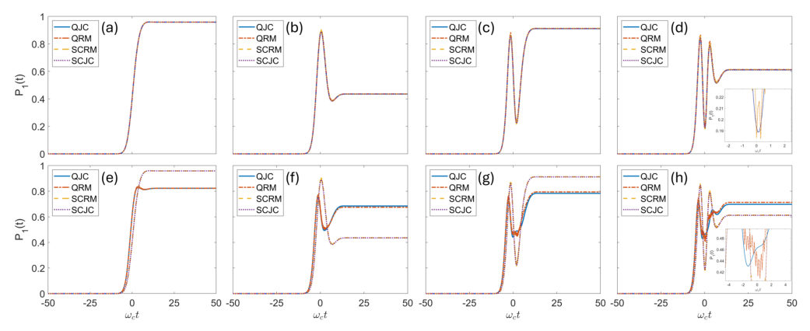
<figcaption class="paper-figure-caption"><b>Fig 1.</b> Figure 1. Time evolution of population transfer P1(t) of the quantum JC model (blue), quantum Rabi model (orange), semiclassical Rabi model (yellow) and semiclassical JC model (purple) with different initial mean photon number |α|2 for various pulse area: (a) |α|2 = 104, Θ = π; (b) |α|2 = 104, Θ = 2π; (c) |α|2 = 104, Θ = 3π; (d) |α|2 = 104, Θ = 4π; (e) |α|2 = 1, Θ = π; (f) |α|2 = 1, Θ = 2π; (g) |α|2 = 1, Θ = 3π; and (h) |α|2 = 1, Θ = 4π. The spin-phonon coupling A is set to be 0.22 ω−2 c , the spectral chirp ϕ′′ = −7 ω2 c and the energy gap at resonant excitation (ε = ω0) is set at 10 ωc.</figcaption>
</figure>
<figure class="paper-figure-card">
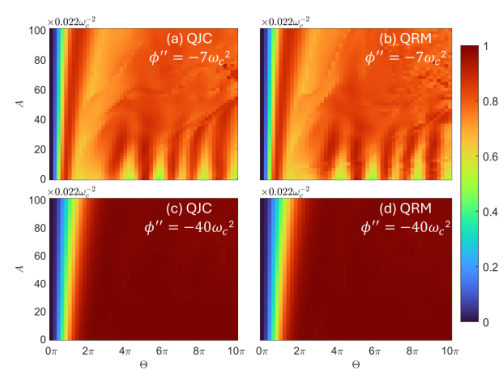
<figcaption class="paper-figure-caption"><b>Fig 2.</b> Figure 2. Two-dimensional heatmaps of the final transition probability Pf as a function of pulse area Θ and spin-phonon coupling A. The top row depicts the heatmaps for the spectral chirp ϕ′′ = −7 ω2 c for (a) QJC and (b) QRM. The bottom row shows the heatmaps for the spectral chirp ϕ′′ = −40 ω2 c for (c) QJC and (d) QRM. The following parameters are set at: |α|2 = 1 and ε = ω0 = 10 ωc.</figcaption>
</figure>
<figure class="paper-figure-card">
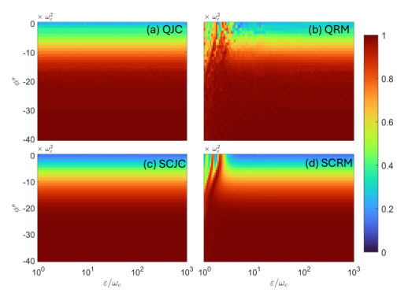
<figcaption class="paper-figure-caption"><b>Fig 3.</b> Figure 3. Two-dimensional heatmaps of the final transition probability Pf as a function of the laser and energy gap res- onance ε = ω0 and spectral chirp ϕ′′. The x-axis is plotted in log-scale in units of ωc. This figure is generated with the following parameters: Θ = 10π and A = 0.22 ω−2 c for the (a) QJC (|α|2 = 1), (b) QRM (|α|2 = 1), (c) SCJC and (d) SCRM.</figcaption>
</figure>
</div>

<p><strong>Summary.</strong> This paper investigates population transfer dynamics in open quantum systems using chirped pulses, comparing full quantum models against semiclassical and Rotating-Wave Approximation (RWA) treatments. The study demonstrates that while semiclassical methods work well for high photon numbers, they fail dramatically at low photon numbers where quantum fluctuations are crucial. The fully quantized Rabi Model provides the most accurate description of robust population transfer.</p>
<p><strong>Why it may be interesting.</strong> This work is highly relevant as it rigorously tests the limits of standard approximations (like RWA) in complex, open quantum systems driven by tailored fields, which is central to quantum control theory in AMO physics.</p>
<details>
<summary>Detailed structure</summary>
<p><strong>Main problem.</strong> The study compares open quantum and semiclassical models for population transfer driven by chirped pulses, focusing on when the Rotating-Wave Approximation (RWA) remains valid.</p>
<p><strong>Main result.</strong> Robust population transfer can be achieved over a wide parameter regime using the full quantum Rabi Model (QRM), which is superior to RWA-based descriptions in capturing necessary quantum fluctuation effects.</p>
<p><strong>Method.</strong> The authors employ a time-dependent variational approach based on the multiple-Davydov D2 trial state to simulate the open quantum dynamics, comparing results against semiclassical approximations.</p>
<p><strong>Model / system.</strong> The system is an open quantum two-level spin coupled to a bosonic bath (phononic bath) and driven by chirped laser pulses. Models compared include Quantum Rabi Model (QRM), Jaynes-Cummings variants, and their respective semiclassical counterparts.</p>
<p><strong>Key observables.</strong> Population transfer $P_1(t)$ and final state population fidelity ($P_f$).</p>
<p><strong>Important parameters / regimes.</strong> Laser spectral chirp ($eta$), pulse area ($\Theta$), mean photon number regime (high vs. low $|\alpha|^2$), and spin-phonon coupling strength.</p>
<p><strong>Assumptions / limitations.</strong> Initially, the analysis assumes a zero-temperature phonon bath to isolate field quantization effects; finite temperature requires advanced representations like P-function.</p>
<p><strong>Figures summary.</strong> Figure 1 illustrates population transfer $P_1(t)$ across four models for varying pulse areas and regimes (high vs. low $|\alpha|^2$). Figure 3 compares the dynamics of the four theoretical models under different parameter settings.</p>
<p><strong>Paper structure.</strong> The paper systematically compares QJC, QRM, SCJC, and SCRM models by analyzing their predictions for population transfer ($P_1(t)$) and final fidelity ($P_f$) across varying field quantization regimes (low vs. high mean photon number). The core argument revolves around identifying the breakdown points of the RWA and semiclassical assumptions.</p>
</details>
<details>
<summary>Abstract</summary>
<p>Population transfer via chirped rapid adiabatic passage is studied using open quantum and semiclassical models, with and without the rotating-wave approximation. A time-dependent variational approach based on the multiple-Davydov D$_2$ trial state is employed to simulate the quantum models with an arbitrary finite mean photon number. We examine the accuracy of both the semiclassical field description and the rotating-wave approximation. Robust population transfer is identified over a wide parameter regime controlled by the laser spectral chirp and is found to be insensitive to the spin--phonon coupling strength, Gaussian pulse area, and energy gap of the two-level system.</p>
</details>
<p><sub><a href="#top">↑ back to top</a></sub></p>

<p><a id="paper-2607.01056"></a></p>
<h3 id="bandwidth-limited-critical-currents-in-electrically-tunable-moire-bands"><a href="http://arxiv.org/abs/2607.01056v1">Bandwidth-Limited Critical Currents in Electrically Tunable Moiré Bands</a></h3>
<p><strong>Authors:</strong> Riccardo Bertini, Xueqiao Wang, Sergey Slizovskiy, Zhiren Zheng, Julien Barrier, Chiara Pizzo, Robin Smeyers, Krystian Nowakowski, Hitesh Agarwal, Alvaro Moreno, Bert Jorissen, Kenji Watanabe, Takashi Taniguchi, Milorad V. Milošević, Lucian Covaci, Vladimir Fal'ko, Pablo Jarillo-Herrero, Roshan Krishna Kumar, Frank H. L. Koppens<br>
<strong>Type:</strong> both · <strong>Category:</strong> strongly correlated electrons · <strong>PDF:</strong> <a href="https://arxiv.org/pdf/2607.01056v1">https://arxiv.org/pdf/2607.01056v1</a><br>
<strong>Analysis basis:</strong> full PDF text, analyzed in chunks
<strong>Topic relevance:</strong> 🔥 <code>non-equilibrium dynamics</code> <strong>4/5</strong> · <code>non-equilibrium universality</code> <strong>3/5</strong> · <code>driven-dissipative phase transition</code> <strong>2/5</strong> · <code>methods for driven-dissipative</code> <strong>2/5</strong> · <code>Frenkel-Kontorova</code> <strong>1/5</strong> · <code>Keldysh / 2PI / non-Gaussian methods</code> <strong>1/5</strong> · <code>analog quantum simulation</code> <strong>1/5</strong> · <code>correlated / nonlocal dissipation</code> <strong>1/5</strong></p>
<div class="figure-strip-hint">↔ Scroll figures horizontally</div>
<div class="paper-figures-scroll">
<figure class="paper-figure-card">

<figcaption class="paper-figure-caption"><b>Fig 1.</b> Figure 1: Low- and high-current transport regimes in BLG/hBN superlattices. (a) Four-probe resistance for device X3 at D = 0 V/nm using 5 nA/µm current bias. Black arrows indicate the position of the secondary neutrality points (NPs) on the hole and electron side. Left inset: Optical image of the device. Right inset: Schematic of the dual-gated geometry. The estimate of twist angle from full filling peaks at secondary NPs gives θ ≈0.13◦. (b) Carrier density–displacement field map of the resistance in the low-current regime. The central indigo streak corresponds to the main NP feature and sidebands correspond to secondary NPs. Stars mark the configurations at which high-current measurements...</figcaption>
</figure>
<figure class="paper-figure-card">
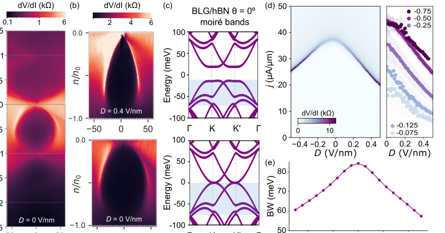
<figcaption class="paper-figure-caption"><b>Fig 2.</b> Figure 2: Tuning the critical regime with carrier density and displacement field. (a) Differential resistance as a function of bias current density and band filling at D = 0 V/nm. Arc-like structures evidencing the evolution of peaks in dV/dI emanate from the main NP and seemingly close at the secondary NPs. A strong asymmetry in the sharpness of the criticality is present between hole and electron filling. Additional features are also visible in the remote bands beyond |n/n0| &gt; 1. (b) Zoom of dV/dI maps in the first valence band for D = 0, 0.4 V/nm (bottom to top). The criticality arcs are visible starting from the main NP and disappearing after n/n0 ≈−0.5, shrinking progressively as |D|...</figcaption>
</figure>
<figure class="paper-figure-card">

<figcaption class="paper-figure-caption"><b>Fig 3.</b> Figure 3: (a) Critical current vs bandwidth for different moiré superlattices. The experimental critical currents are extracted from jc at n/n0 = −0.5 for the available data in the literature: † from Berdyugin et al. [13], ‡ Barrier [29], ∗Tian et al. [14]. The currents are normalized by BZ size 2π/d to isolate the bandwidth dependence according to Eq. 4. Bandwidths for all the samples are calculated using the continuum model. The dashed black line represents the maximum current limit according to Eq. 4. Inset: Same as main panel, but for the different BLG/hBN superlattices measured in this work, different colors correspond to the same device measured at different displacement fields...</figcaption>
</figure>
<figure class="paper-figure-card">

<figcaption class="paper-figure-caption"><b>Fig 4.</b> Figure 4: (a) Schematic illustration of the maximum current in a miniband, which grows with bandwidth W and decreases with d. The insets show the BZ corresponding to small and large moiré period, colored with the band velocity vkx and the shifted fermi surface along the field direction. (b) The different lines represent the density dependence of the maximum current obtained from the model, displaying arc-like structures similar to the experimental dV/dI peaks. The colormap shows the same data as in the lower panel in Figure 2b, with the experimental current multiplied by a factor 6 to show the qualitative agreement with the model for W = 60 meV. (c) Bandwidth dependence of the critical...</figcaption>
</figure>
</div>

<p><strong>Summary.</strong> The paper investigates high-current transport in moiré superlattices, showing that the limiting critical current ($j_c$) is dictated by the available miniband bandwidth ($W$). By tuning this bandwidth using an electric field, the authors establish a universal scaling law ($j_c \propto W$), proving that non-linear electrical measurements serve as a fast and accessible probe for mapping out electronic band structure evolution.</p>
<p><strong>Why it may be interesting.</strong> This work provides an electrical diagnostic tool to probe fundamental electronic structure properties (miniband bandwidth) in strongly correlated 2D materials, linking macroscopic transport measurements directly to microscopic band dispersion limits.</p>
<details>
<summary>Detailed structure</summary>
<p><strong>Main problem.</strong> The study aims to establish a direct, universal link between the electronic miniband bandwidth ($W$) and the critical current ($j_c$) observed during high-current, out-of-equilibrium transport in moiré superlattices.</p>
<p><strong>Main result.</strong> The research demonstrates that the critical current is fundamentally limited by the available bandwidth of the minibands, showing a direct proportionality ($j_c \propto W$).</p>
<p><strong>Method.</strong> The work combines experimental measurements (differential resistance $  ext{dV/dI}$ vs. bias current $j$) with theoretical modeling using a minimal analytical model derived from the Boltzmann transport equation.</p>
<p><strong>Model / system.</strong> The physical system is bilayer graphene on hBN forming moiré superlattices, which are electrically tuned via out-of-plane displacement fields ($D$). The analysis focuses on the high-current regime where transport becomes non-linear and out-of-equilibrium.</p>
<p><strong>Key observables.</strong> Critical current density ($j_c$), differential resistance ($ ext{dV/dI}$), and electronic miniband bandwidth ($W$).</p>
<p><strong>Important parameters / regimes.</strong> Out-of-plane displacement field ($D$), carrier density ($n/n_0$), and the ratio of $j_c$ to $W$.</p>
<p><strong>Assumptions / limitations.</strong> The high-current transport is assumed to be governed by a bandwidth-limited saturation mechanism, allowing for a universal scaling law between $j_c$ and $W$.</p>
<p><strong>Figures summary.</strong> Figures show $ ext{dV/dI}$ maps revealing arc-like structures whose critical points ($j_c$) decrease as the displacement field $|D|$ increases. These experimental trends are mapped against calculated bandwidth evolution ($ ext{BW}(D)$) to confirm proportionality.</p>
<p><strong>Paper structure.</strong> The paper progresses by first characterizing low-current transport, then investigating the high-current $  ext{dV/dI}$ response, establishing the empirical scaling $j_c \propto W$, and finally validating this relationship using a minimal analytical model derived from non-equilibrium transport theory.</p>
</details>
<details>
<summary>Abstract</summary>
<p>Moiré superlattices host narrow minibands whose bandwidth governs correlated and topological phases. Here, we demonstrate that the bandwidth also sets the critical current for the onset of out-of-equilibrium transport. In bilayer graphene aligned to hexagonal boron nitride, we explore the high-current transport regime as we continuously flatten the valence miniband using an out-of-plane displacement field. We observe a significant reduction in the critical current, which is captured by a minimal analytical model and corresponds to the calculated narrowing of the miniband. Moreover, by comparing distinct moiré platforms, we show that the scaling between critical current and bandwidth is a universal feature of graphene superlattices. Our results reveal a direct link between miniband dispersion and high-current transport, and establish this regime as a fast and accessible electrical probe of bandwidth evolution.</p>
</details>
<p><sub><a href="#top">↑ back to top</a></sub></p>

<p><a id="paper-2607.00193"></a></p>
<h3 id="tcl4-asymptotic-redundancy-and-canonically-consistent-master-equations"><a href="http://arxiv.org/abs/2607.00193v1">TCL4 Asymptotic Redundancy and Canonically Consistent Master Equations</a></h3>
<p><strong>Authors:</strong> Dragomir Davidovic<br>
<strong>Type:</strong> theory · <strong>Category:</strong> statistical mechanics · <strong>PDF:</strong> <a href="https://arxiv.org/pdf/2607.00193v1">https://arxiv.org/pdf/2607.00193v1</a><br>
<strong>Analysis basis:</strong> full PDF text, analyzed in chunks
<strong>Topic relevance:</strong> 🔥 <code>methods for driven-dissipative</code> <strong>4/5</strong> · <code>Keldysh / 2PI / non-Gaussian methods</code> <strong>3/5</strong> · <code>non-equilibrium dynamics</code> <strong>3/5</strong> · <code>correlated / nonlocal dissipation</code> <strong>2/5</strong> · <code>driven-dissipative phase transition</code> <strong>2/5</strong> · <code>non-equilibrium universality</code> <strong>1/5</strong></p>
<div class="figure-strip-hint">↔ Scroll figures horizontally</div>
<div class="paper-figures-scroll">
<figure class="paper-figure-card">

<figcaption class="paper-figure-caption"><b>Fig 1.</b> FIG. 1. Three canonically consistent closures of the Redfield equation. Time evolution of the trace distance between the TCL4 solution and the solutions of four mas- ter equations for a four-level system. The black, red, blue, and brown curves correspond to the Redfield equation, the latent-resonance closure, the virtual-coherence closure, and the expanded virtual-coherence closure, respectively. The de- phasing parameter ξ = 0, 1, 2, 3 in panels (a)–(d), respectively. λ2 = 1.25×10−3, kBT = 0.26. The remaining parameters are given in Appendix A, Sample 1.</figcaption>
</figure>
<figure class="paper-figure-card">
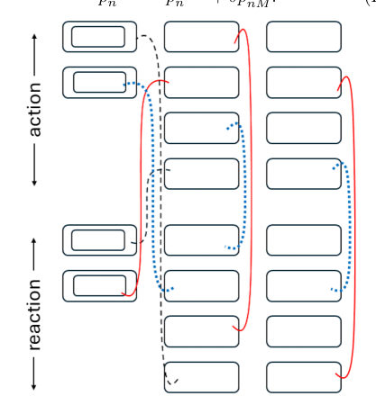
<figcaption class="paper-figure-caption"><b>Fig 2.</b> FIG. 2. Schematic representation of the cancellations ap- pearing in the induction step N →N + 1. Each rectangle represents a contribution to the latent-resonance interaction shell generated by the addition of the level M = N + 1. The upper block (“action”) contains the terms induced in the pre- existing N-level generator and represents the ten terms in Eq. (B39). The lower block (“reaction”) contains the contri- butions from the new matrix element Lnn,MM and represents the ten terms in Eq. (B40). Double boxes denote terms carry- ing an additional prefactor of 2. Colored connections indicate direct and KMS-induced cancellations. After these cancella- tions, only the newly generated...</figcaption>
</figure>
</div>

<p><strong>Summary.</strong> The paper analyzes the complexity of time-convolutionless (TCL4) generators describing open quantum system relaxation. It demonstrates that much of this high-order structure is asymptotically redundant. By applying stationary-state-preserving transformations, the generator can be drastically simplified into a 'virtual coherence pathway' that accurately predicts equilibrium corrections.</p>
<p><strong>Why it may be interesting.</strong> This work provides a deep structural insight into how higher-order approximations in open quantum dynamics simplify dramatically when constrained by physical requirements like reaching equilibrium, offering powerful simplification techniques for complex master equations.</p>
<details>
<summary>Detailed structure</summary>
<p><strong>Main problem.</strong> The core problem is understanding the opaque dynamics of open quantum systems relaxing toward a Kubo–Martin–Schwinger (KMS) equilibrium state, specifically reconciling complex high-order master equation generators with simple stationary-state corrections.</p>
<p><strong>Main result.</strong> The apparent complexity of the fourth-order time-convolutionless (TCL4) generator is shown to be asymptotically redundant, simplifying down to a 'virtual coherence pathway' that correctly captures the second-order stationary state corrections.</p>
<p><strong>Method.</strong> The authors employ successive stationary-state-preserving transformations and utilize perturbative expansions in weak coupling ($\lambda$) to simplify the TCL generator structure.</p>
<p><strong>Model / system.</strong> The system is an open quantum system weakly coupled to a thermal bath, described by a reduced density matrix $
ho_S(t)$ governed by time-local master equations derived from the total Hamiltonian $H = H_S + H_B + \lambda H_I$.</p>
<p><strong>Key observables.</strong> KMS equilibrium state populations ($p_\infty$), second-order stationary state corrections (e.g., mean-force Gibbs correction), and the TCL4 population generator coefficients.</p>
<p><strong>Important parameters / regimes.</strong> Weak coupling parameter ($\lambda^2 \ll 1$), inverse temperature ($eta$), and spectral density functions defining bath correlations.</p>
<p><strong>Assumptions / limitations.</strong> The analysis relies on perturbative expansions in $\lambda$ and assumes non-degenerate Hamiltonians ($H_{nd}$) for the initial derivations, though extensions are discussed.</p>
<p><strong>Figures summary.</strong> Figures illustrate the time evolution of the trace distance between solutions derived from different master equation closures (Redfield vs. virtual coherence) for a four-level GUE system.</p>
<p><strong>Paper structure.</strong> The paper progresses by first identifying the discrepancy between TCL4 and known stationary results, then developing mathematical tools like selection rules and auxiliary representations to prove that transformations can eliminate redundant components, culminating in the final compressed closure form.</p>
</details>
<details>
<summary>Abstract</summary>
<p>Left alone, open quantum systems relax toward a Kubo--Martin--Schwinger (KMS) equilibrium state, yet the inner workings of this process remain opaque. It remains unclear why the intricate fourth-order time-convolutionless (TCL4) population generator reproduces the comparatively simple second-order stationary state corrections. Even more surprisingly, stationary-state corrections of such precision can be compressed into a simple virtual coherence pathway: an open quantum systems analogue of virtual transitions, in which populations communicate through coherences that are never occupied.   Here we show that this simplification arises through a sequence of stationary-state-preserving transformations that progressively eliminate asymptotically redundant components while preserving the stationary state, ultimately yielding the virtual coherence pathway. This resolves the longstanding stationary-state problem of the Redfield equation and reveals that much of the apparent complexity of the TCL4 generator is asymptotically redundant.</p>
</details>
<p><sub><a href="#top">↑ back to top</a></sub></p>

<p><a id="paper-2607.01151"></a></p>
<h3 id="entanglement-fingerprint-of-a-non-invertible-symmetry-exact-fibonacci-cut-charges-on-the-lattice"><a href="http://arxiv.org/abs/2607.01151v1">Entanglement fingerprint of a non-invertible symmetry: exact Fibonacci cut charges on the lattice</a></h3>
<p><strong>Authors:</strong> Yi Liang<br>
<strong>Type:</strong> theory · <strong>Category:</strong> statistical mechanics · <strong>PDF:</strong> <a href="https://arxiv.org/pdf/2607.01151v1">https://arxiv.org/pdf/2607.01151v1</a><br>
<strong>Analysis basis:</strong> full PDF text, analyzed in chunks
<strong>Topic relevance:</strong> 🔥 <code>entanglement &amp; information structure</code> <strong>4/5</strong> · <code>driven-dissipative phase transition</code> <strong>2/5</strong> · <code>non-equilibrium universality</code> <strong>2/5</strong> · <code>Frenkel-Kontorova</code> <strong>1/5</strong> · <code>analog quantum simulation</code> <strong>1/5</strong> · <code>correlated cavity matter</code> <strong>1/5</strong> · <code>methods for driven-dissipative</code> <strong>1/5</strong> · <code>non-equilibrium dynamics</code> <strong>1/5</strong></p>
<div class="figure-strip-hint">↔ Scroll figures horizontally</div>
<div class="paper-figures-scroll">
<figure class="paper-figure-card">

<figcaption class="paper-figure-caption"><b>Fig 1.</b> FIG. 1. Exact finite-size cut-charge fingerprint. (a) The two Fibonacci charge sectors carry fixed weights 𝑃1 = 1/𝐷2 ≈ 0.2764 and 𝑃𝜏 = 𝜙2/𝐷2 ≈0.7236, obtained from the sandwiched-projector identity rather than from a large-𝐿ex- trapolation. (b) The ratio 𝑃𝜏/𝑃1 equals 𝜙2 for every even 𝐿; numerical verification on 𝐿= 8, 10, 12, 14 confirms the iden- tity to machine precision (residual &lt; 5.3 × 10−15).</figcaption>
</figure>
</div>

<p><strong>Summary.</strong> The paper establishes a novel method to find the boundary entropy associated with a non-invertible symmetry defect using only finite lattice measurements. By proving an exact operator identity on the Fibonacci golden chain, the authors derive that the ratio of cut charges is fixed by the golden ratio $\phi$, providing a sharp fingerprint independent of continuum limits.</p>
<p><strong>Why it may be interesting.</strong> This work provides an exact, non-perturbative result for topological properties (boundary entropy) in 1D quantum systems, which is highly relevant for understanding entanglement structure in critical many-body models.</p>
<details>
<summary>Detailed structure</summary>
<p><strong>Main problem.</strong> To determine if a non-invertible defect leaves an exact, finite-size entanglement fingerprint on the lattice, bypassing the need for thermodynamic extrapolation.</p>
<p><strong>Main result.</strong> The cut-charge weights for the Fibonacci golden chain are shown to have an exact ratio $P_{	au}/P_1 = \phi^2$ at finite length, yielding a sharp lattice-level boundary entropy $\ln g = \ln \phi$.</p>
<p><strong>Method.</strong> The proof combines a finite-dimensional operator identity for sandwiched cut projectors with the Perron–Frobenius sector theorem applied to the even-length ground state.</p>
<p><strong>Model / system.</strong> The study focuses on the Fibonacci golden chain, which models a system exhibiting a non-invertible duality defect $Y_{	au}$. The analysis uses Temperley–Lieb generators and analyzes projections onto specific sectors defined by this defect.</p>
<p><strong>Key observables.</strong> Cut-charge weights ($P_a$), boundary entropy ($\ln g$), and the ratio of these charges ($P_{	au}/P_1$).</p>
<p><strong>Important parameters / regimes.</strong> The golden ratio $\phi$, finite lattice size $L$ (specifically even $L$), and the two Fibonacci charges $\{1, 	au\}$.</p>
<p><strong>Assumptions / limitations.</strong> The result is explicitly restricted to the two-charge sector $\{1, 	au\}$ and is separate from the continuum scaling limit analysis involving Virasoro branching.</p>
<p><strong>Figures summary.</strong> Numerical verification (Fig. 1) shows that the ratio of cut-charge weights $P_{	au}/P_1$ remains exactly $\phi^2$ for various even chain lengths $L$.</p>
<p><strong>Paper structure.</strong> The paper establishes the problem by noting existing methods, then develops the core proof using operator identities and Perron-Frobenius theory to derive the exact finite-size relationship between cut charges, concluding with a statement of this lattice-level fingerprint.</p>
</details>
<details>
<summary>Abstract</summary>
<p>Non-invertible defects are usually diagnosed through scaling spectra or infrared CFT data. We show that the Fibonacci duality defect of the critical golden chain already carries an exact categorical fingerprint at finite lattice size. The even-length antiferromagnetic ground state has fixed cut-charge weights, giving P_tau/P_1=phi^2 and log g=log phi without finite-size extrapolation. The proof is a finite-dimensional operator identity for the sandwiched cut projectors, combined with a Perron-Frobenius sector theorem for the even-length ground state. This gives a sharp lattice-level boundary entropy for a non-Abelian duality defect. We also separate this exact two-charge result from the finer six-primary tricritical-Ising resolution: the latter is located by the standard scaling-limit Virasoro branching of A_4 affine-TL packets, and is not an assumption in the finite-size theorem.</p>
</details>
<p><sub><a href="#top">↑ back to top</a></sub></p>

<p><a id="paper-2607.00449"></a></p>
<h3 id="slow-heat-driven-flow-in-a-gas-of-hard-disks"><a href="http://arxiv.org/abs/2607.00449v1">Slow heat-driven flow in a gas of hard disks</a></h3>
<p><strong>Authors:</strong> Amit Kumar, Abhishek Dhar, Baruch Meerson<br>
<strong>Type:</strong> both · <strong>Category:</strong> statistical mechanics · <strong>PDF:</strong> <a href="https://arxiv.org/pdf/2607.00449v1">https://arxiv.org/pdf/2607.00449v1</a><br>
<strong>Analysis basis:</strong> full PDF text, analyzed in chunks
<strong>Topic relevance:</strong> 🔥 <code>non-equilibrium dynamics</code> <strong>4/5</strong> · <code>methods for driven-dissipative</code> <strong>3/5</strong> · <code>non-equilibrium universality</code> <strong>3/5</strong> · <code>driven-dissipative phase transition</code> <strong>2/5</strong> · <code>Keldysh / 2PI / non-Gaussian methods</code> <strong>1/5</strong></p>
<div class="figure-strip-hint">↔ Scroll figures horizontally</div>
<div class="paper-figures-scroll">
<figure class="paper-figure-card">

<figcaption class="paper-figure-caption"><b>Fig 1.</b> FIG. 1. Scaling function Θ(ξ) for TL/TR = 2 (left panel) and 5 (right panel).</figcaption>
</figure>
<figure class="paper-figure-card">

<figcaption class="paper-figure-caption"><b>Fig 2.</b> FIG. 2. Dependence of the NSE solution on the initial pressure p0: Rescaled density R (a), velocity V (b), and temperature Θ (c) as functions of the rescaled coordinate ξ, obtained from numerical solution of Eqs. (18) and (19) for pressures p0 = 5, 10, and 20. As the pressure increases, the transition region broadens, and the magnitude of the negative velocity peak increases. The parameters are ρL = 0.075, ρR = 0.15, TR = p0/[ρRZ(ρR)], and TL = p0/[ρLZ(ρL)].</figcaption>
</figure>
<figure class="paper-figure-card">
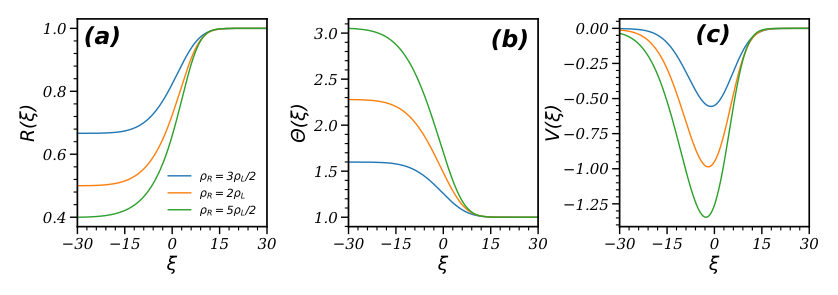
<figcaption class="paper-figure-caption"><b>Fig 3.</b> FIG. 3. Dependence of the finite-density solution on the density ratio ρR/ρL: Shown are the rescaled density R (a), velocity V (b), and temperature Θ (c) as functions of the rescaled coordinate ξ, obtained from the numerical solution of Eqs. (18) and (19) for ρR = 3ρL/2, 2ρL, and 5ρL/2, with ρL = 0.075. As ρR increases, the density and temperature profiles become steeper, while the magnitude of the negative velocity peak increases, and its position shifts to the left. The parameters are: p0 = 10, TR = p0/[ρRZ(ρR)], and TL = p0/[ρLZ(ρL)].</figcaption>
</figure>
<figure class="paper-figure-card">

<figcaption class="paper-figure-caption"><b>Fig 4.</b> FIG. 4. Finite-density hard disk gas vs. ideal gas. Shown are the rescaled density R, velocity V , and temperature Θ as functions of the rescaled coordinate ξ, obtained from the numerical solution of Eqs. (18) and (19). Panels (a–c) correspond to the initial densities ρL = 0.075 and ρR = 0.15, while panels (d–f) correspond to ρL = 0.005 and ρR = 0.01. The ideal-gas results are obtained by setting the compressibility factor Z(ρ) = 1. It is evident from the plots that, as the initial densities become very small, the finite-density solution and the ideal-gas solutions converge. The parameters are: p0 = 10, TR = p0/[ρRZ(ρR)], and TL = p0/[ρLZ(ρL)].</figcaption>
</figure>
<figure class="paper-figure-card">
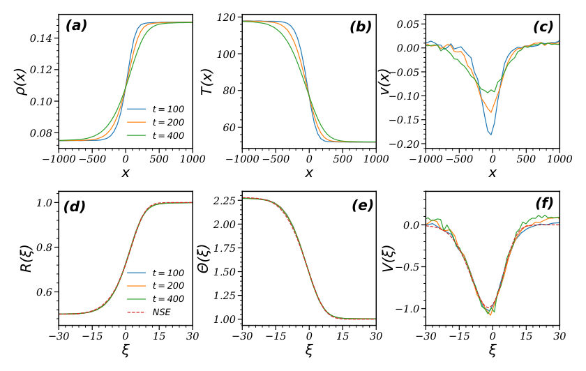
<figcaption class="paper-figure-caption"><b>Fig 5.</b> FIG. 5. Spatio-temporal behavior of (a–c) density, temperature, and velocity as functions of x at different times t = 100, 200, 400, and (d–f) the scaled functions and comparison with the hydrodynamic predictions. The solid lines in Figs. (a–f) represent the EDMD data, and the dashed lines in Figs. (e–f) represent the solution of Eqs. (18) and (19). We see that the MD data shows good scaling collapse in accordance with the scaling ansatz Eq. (17). The results are shown for the parameters: p0 = ρTZ(ρ) = 10, ρR = 0.15, ρL = 0.075, TR = p0/[ρRZ(ρR)], and TL = p0/[ρLZ(ρL)]. The typical simulation box for these parameters was L = 104 and W = 10 with the total of N = 11, 250 hard disks. The data...</figcaption>
</figure>
</div>

<p><strong>Summary.</strong> This paper analyzes slow heat flow in a gas of hard disks using an isobaric hydrodynamic model, extending the theory beyond the dilute ideal gas limit by including finite-density effects. The key achievement is demonstrating excellent quantitative agreement between the derived continuum equations and detailed molecular dynamics simulations, validating the theoretical framework for strongly inhomogeneous cooling flows.</p>
<p><strong>Why it may be interesting.</strong> While focused on classical hard disks, the rigorous development of a low-Mach number hydrodynamic description that bridges microscopic simulation data (MD) to continuum theory is highly relevant for understanding non-equilibrium transport in complex quantum systems where such limits might apply.</p>
<details>
<summary>Detailed structure</summary>
<p><strong>Main problem.</strong> The study investigates slow heat-driven flow in a gas of hard disks under nearly isobaric conditions, aiming to provide a particle-level test of such non-equilibrium dynamics.</p>
<p><strong>Main result.</strong> The theoretical predictions derived from the low-Mach number, isobaric hydrodynamic equations show very good agreement with event-driven molecular dynamics simulations across both dilute and finite-density regimes.</p>
<p><strong>Method.</strong> The authors developed an extended hydrodynamic theory incorporating a hard-disk equation of state and solved the resulting coupled nonlinear ODEs, comparing these solutions against detailed MD simulations.</p>
<p><strong>Model / system.</strong> The system is a two-dimensional gas of elastically colliding hard disks confined to a long channel. The flow is driven by initial temperature and density contrasts while maintaining nearly constant pressure (isobaric evolution).</p>
<p><strong>Key observables.</strong> Temperature (T), density (rho), velocity (v), and pressure (p) profiles across the transition region.</p>
<p><strong>Important parameters / regimes.</strong> Low-Mach number regime, near-isobaric condition ($p \approx 	ext{const}$), and finite-density corrections relative to the ideal gas limit.</p>
<p><strong>Assumptions / limitations.</strong> The flow is assumed to be at low Mach numbers, allowing for an isobaric hydrodynamic description; the theory is extended by incorporating a non-ideal equation of state for hard disks.</p>
<p><strong>Figures summary.</strong> Figures illustrate the scaling collapse of density, velocity, and temperature profiles over time (t=100, 200, 400) when comparing MD data to hydrodynamic solutions, confirming near-isobaric pressure behavior.</p>
<p><strong>Paper structure.</strong> The paper first establishes the low-Mach number isobaric hydrodynamic framework, extending it from ideal gas theory to finite densities. It then solves the resulting coupled ODEs and validates these theoretical results by direct comparison with event-driven molecular dynamics simulations across various time scales.</p>
</details>
<details>
<summary>Abstract</summary>
<p>We study a slow heat-driven flow in a gas of elastically colliding hard disks confined to a long channel. The initial state consists of two regions with large temperature and density contrasts but nearly equal pressures, leading to a low-Mach-number, nearly isobaric evolution. In the dilute limit, the corresponding isobaric hydrodynamic theory reduces to a previously known ideal-gas description. We extend this theory to finite densities by incorporating a non-ideal equation of state of a hard-disk fluid, and solve the resulting one-dimensional equations numerically. Finite-density effects produce appreciable deviations from the ideal-gas prediction. We then test the theory directly against event-driven molecular dynamics simulations of hard disks and find very good agreement in both the dilute and finite-density regimes. The results provide, to our knowledge, the first particle-level test of isobaric gas dynamics of a strongly inhomogeneous cooling flow.</p>
</details>
<p><sub><a href="#top">↑ back to top</a></sub></p>

<p><a id="paper-2607.00284"></a></p>
<h3 id="active-learning-for-calibrating-entangling-gates-via-surrogate-based-optimization"><a href="http://arxiv.org/abs/2607.00284v1">Active Learning for Calibrating Entangling Gates via Surrogate-Based Optimization</a></h3>
<p><strong>Authors:</strong> Caleb Walton, Patricia García-Caspueñas, Filippo Zacchei, Ana Larrañaga, Steven L. Brunton, Sara Mouradian<br>
<strong>Type:</strong> both · <strong>Category:</strong> other · <strong>PDF:</strong> <a href="https://arxiv.org/pdf/2607.00284v1">https://arxiv.org/pdf/2607.00284v1</a><br>
<strong>Analysis basis:</strong> full PDF text, analyzed in chunks
<strong>Topic relevance:</strong> 🔥 <code>QC/QI experiment</code> <strong>4/5</strong> · <code>quantum measurements</code> <strong>3/5</strong> · <code>measurement-induced transitions</code> <strong>2/5</strong> · <code>analog quantum simulation</code> <strong>1/5</strong> · <code>methods for driven-dissipative</code> <strong>1/5</strong> · <code>non-equilibrium dynamics</code> <strong>1/5</strong></p>
<div class="figure-strip-hint">↔ Scroll figures horizontally</div>
<div class="paper-figures-scroll">
<figure class="paper-figure-card">

<figcaption class="paper-figure-caption"><b>Fig 1.</b> FIG. 1. Schematic of the optimization pipeline. The goal is to maximize the gate fidelity score Q as a function of the calibration parameters: Rabi frequency Ω, sideband detuning δ and center-line detuning ωcl. First, the score is queried from the Quantum System, represented by an unknown noise-free landscape f(x) and a modeled noise term ε dependent on the inputs and the number of measurements shots N. Next, a Gaussian Process acts as a probabilistic surrogate that models f(x) from the available system scores to predict the mean and variance of unexplored calibration settings. This surrogate is exploited for fast Optimization of the predicted mean landscape. Finally, an Active Learning...</figcaption>
</figure>
<figure class="paper-figure-card">

<figcaption class="paper-figure-caption"><b>Fig 2.</b> FIG. 2. Two-parameter calibration landscapes for the two-MSπ/2 sequence. Each panel plots the infinite-shot gate score (Q∞) while two controls are varied and the remaining controls are fixed at their optimized values. Brighter regions correspond to higher, more optimal scores. The panels depict variations in: (a) sideband detuning and center-line detuning, (b) Rabi frequency and sideband detuning, and (c) Rabi frequency and center-line detuning.</figcaption>
</figure>
<figure class="paper-figure-card">
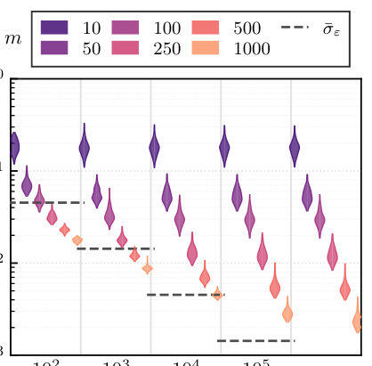
<figcaption class="paper-figure-caption"><b>Fig 3.</b> FIG. 3. Root Mean Square Error distributions of the GP predictions relative to the true landscape. The surrogate’s performance is evaluated across different numbers of measurement shots N (grouped on the x-axis) and varying numbers of training points m. The errors are displayed as violin plots. The dashed gray lines correspond to the mean binomial noise σε for each N and provide a reference of the expected uncertainty.</figcaption>
</figure>
<figure class="paper-figure-card">

<figcaption class="paper-figure-caption"><b>Fig 4.</b> FIG. 4. Results of BO with active learning. (a) Deter- ministic optimization trajectories for: r = 1.0, dashed black, spans ±2π × 10 kHz in ωcl and δ, and ±20% in laser amplitude. The half-scale (r = 0.5, solid dark blue) and one-tenth-scale (r = 0.1, dotted blue) cases reduce these bounds by factors of two and ten, respectively. The vertical axis shows the op- timization loss, 1 −Q∞. The bold curves show the median trajectory and shaded trajectories span the 5th to 95th per- centile. The gray dashed-dotted line represents the simulation fidelity limit. (b) Optimization trajectories with finite-shot sampling evaluated at the half-scale parameter range (r = 0.5). Trajectories are shown for N...</figcaption>
</figure>
<figure class="paper-figure-card">
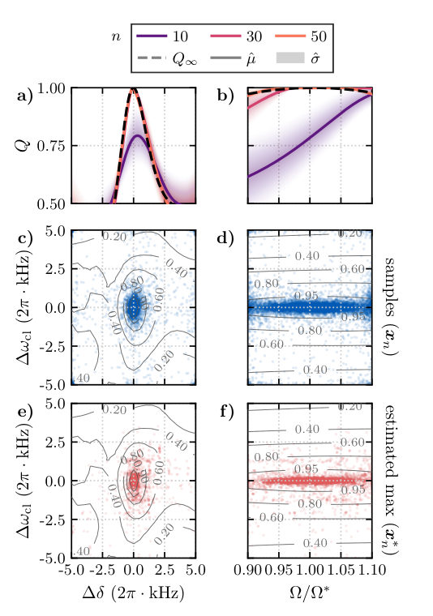
<figcaption class="paper-figure-caption"><b>Fig 5.</b> FIG. 5. Gaussian Process fitting and active learning distributions for the N = 100 scenario. (a,b) 1D slices of the predicted score Q along ∆δ and Ω/Ω∗, respectively. The calibration parameters not shown in a given slice are fixed at their optimal values. Solid colored lines and shaded regions correspond to the surrogate’s predicted mean ˆµ and uncertainty ˆσ at different iterations n of the active learning loop. The dashed black line represents the target infinite-shot noiseless landscape Q∞. (c,d) Distribution of candidate points xn sampled during the active learning step across all iterations (from 1 to nmax) and 100 independent runs, where denser blue regions indicate parameters sampled...</figcaption>
</figure>
</div>

<p><strong>Summary.</strong> The paper presents an active learning framework using Bayesian Optimization and Gaussian Processes to calibrate entangling gates on trapped ions. By treating the unknown gate fidelity landscape as a function to be learned from limited, noisy measurements, the method efficiently converges toward optimal control parameters. This establishes a robust protocol for quantum system calibration that minimizes experimental overhead.</p>
<p><strong>Why it may be interesting.</strong> This work provides a powerful, model-free toolset for experimental quantum control, showing how advanced machine learning can overcome the practical limitations imposed by noisy measurements in complex physical systems like trapped ions.</p>
<details>
<summary>Detailed structure</summary>
<p><strong>Main problem.</strong> The central problem is calibrating quantum gates, specifically entangling gates on trapped ions, whose fidelity degrades due to unknown variations in physical control parameters.</p>
<p><strong>Main result.</strong> An active learning framework utilizing Gaussian Process surrogate models successfully accelerates the discovery of optimal gate parameters, achieving convergence limited only by the inherent quantum projection noise floor.</p>
<p><strong>Method.</strong> The authors employ Bayesian Optimization (BO) guided by a Gaussian Process (GP) to model the unknown relationship between control inputs and gate fidelity. This iterative process minimizes costly physical measurements while maximizing information gain.</p>
<p><strong>Model / system.</strong> The system studied is trapped-ion qubits implementing Mølmer-Sørensen gates, whose Hamiltonian dynamics are parameterized by laser amplitudes ($\Omega$), sideband detuning ($\delta$), and center-line detuning ($\omega_{cl}$).</p>
<p><strong>Key observables.</strong> Gate fidelity score ($Q$) derived from state probabilities ($P_{ee}$), Root Mean Squared Error (RMSE) of GP predictions, and the final optimal control parameters.</p>
<p><strong>Important parameters / regimes.</strong> Rabi frequency ($\Omega$), sideband detuning ($\delta$), center-line detuning ($\omega_{cl}$), measurement shot number ($N$), and initial parameter uncertainty range ($r$).</p>
<p><strong>Assumptions / limitations.</strong> The noise in measurements is modeled as heteroskedastic quantum projection noise, and the GP surrogate model assumes a probabilistic mapping of parameters to fidelity.</p>
<p><strong>Figures summary.</strong> Figures illustrate optimization pipelines (Query $
ightarrow$ GP Prediction $
ightarrow$ Selection), show how GP predictions track the true landscape ($Q_\infty$), and demonstrate that final fidelity saturates according to $N^{-1/2}$ scaling due to measurement noise.</p>
<p><strong>Paper structure.</strong> The paper introduces the problem of noisy calibration, details the BO/GP framework for active learning, validates the method using trapped-ion gate simulations (IonSim.jl), analyzes convergence rates based on shot number ($N$), and concludes by demonstrating the robustness of the protocol.</p>
</details>
<details>
<summary>Abstract</summary>
<p>The fidelity of a quantum gate is sensitive to small deviations in the physical control parameters. Unfortunately, it is generally difficult to exactly model the implemented Hamiltonian for a set of user-defined parameters, necessitating on-device calibration. Here, we present an active learning framework based on Bayesian optimization with a Gaussian Process surrogate to find the optimal parameter set. We validate the technique through numerical calibration of the laser amplitude and frequencies that implement the trapped-ion Mølmer Sørensen gate. We show that a Gaussian process can model the Hamiltonian dynamics. The addition of active learning accelerates the discovery of the optimal parameter set with speed and final fidelity dependent on the quantum projection noise of the data. These results establish the utility of active learning and surrogate models for quantum calibration and control.</p>
</details>
<p><sub><a href="#top">↑ back to top</a></sub></p>

<p><a id="paper-2607.00735"></a></p>
<h3 id="experimental-quantification-of-layered-error-suppression-in-fiber-interconnected-quantum-data-centers"><a href="http://arxiv.org/abs/2607.00735v1">Experimental Quantification of Layered Error Suppression in Fiber-Interconnected Quantum Data Centers</a></h3>
<p><strong>Authors:</strong> Seyed Navid Elyasi, Sima Bahrani, Rui Wang, Dimitra Simeonidou, Paolo Monti, Rui Lin<br>
<strong>Type:</strong> experiment · <strong>Category:</strong> quantum information and computing · <strong>PDF:</strong> <a href="https://arxiv.org/pdf/2607.00735v1">https://arxiv.org/pdf/2607.00735v1</a><br>
<strong>Analysis basis:</strong> full PDF text, analyzed in chunks
<strong>Topic relevance:</strong> 🔥 <code>QC/QI experiment</code> <strong>4/5</strong> · <code>correlated / nonlocal dissipation</code> <strong>2/5</strong> · <code>quantum measurements</code> <strong>2/5</strong> · <code>entanglement &amp; information structure</code> <strong>1/5</strong> · <code>methods for driven-dissipative</code> <strong>1/5</strong> · <code>non-equilibrium dynamics</code> <strong>1/5</strong> · <code>quantum optics experiment</code> <strong>1/5</strong></p>
<div class="figure-strip-hint">↔ Scroll figures horizontally</div>
<div class="paper-figures-scroll">
<figure class="paper-figure-card">

<figcaption class="paper-figure-caption"><b>Fig 1.</b> Fig. 1: (a) Fiber-interconnected superconducting QPUs with a transduction interface, where communication noise is emulated via a quantum collisional model. (b) Protocol layers including entanglement generation, noisy transmission, purification, Pauli-twirled two-qubit gates, and readout mitigation. Colors indicate qubit roles and system components.</figcaption>
</figure>
<figure class="paper-figure-card">

<figcaption class="paper-figure-caption"><b>Fig 2.</b> Fig. 2: Circuit-level implementation of the proposed error suppression framework. A Bell pair is distributed through a collisional communication channel modeling transduction and fiber noise. Entanglement purification is applied to improve resource fidelity, followed by remote gate execution using a cat-state protocol with Pauli-twirled two-qubit gates. Final measurement outcomes are corrected using readout mitigation.</figcaption>
</figure>
<figure class="paper-figure-card">
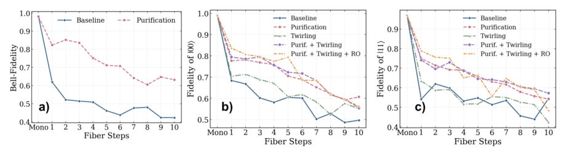
<figcaption class="paper-figure-caption"><b>Fig 3.</b> Fig. 3: Remote gate performance across increasing collisional-model fiber steps, with the monolithic noiseless case shown as Mono. (a) Quality of the distributed entanglement, quantified by the Bell-state fidelity. (b) Fidelity of |00⟩for a remote CNOT with the control qubit prepared in |0⟩. (c) Fidelity of |11⟩for control prepared in |1⟩.</figcaption>
</figure>
</div>

<p><strong>Summary.</strong> This paper experimentally quantifies error suppression techniques for superconducting QPUs connected via optical fibers, simulating realistic communication noise. By implementing a layered protocol combining entanglement purification, Pauli twirling, and readout mitigation, the researchers achieved over 20% fidelity improvement in remote quantum gate operations. This work provides crucial benchmarks for building scalable, distributed quantum data centers.</p>
<p><strong>Why it may be interesting.</strong> This work is highly relevant as it tackles the practical engineering challenge of scaling quantum computation beyond a single chip by quantifying and mitigating decoherence sources inherent in quantum networking links (fiber/transduction interfaces).</p>
<details>
<summary>Detailed structure</summary>
<p><strong>Main problem.</strong> The primary challenge addressed is overcoming scalability limits in quantum computation by enabling distributed processing across interconnected Quantum Data Centers (QDCs) linked via optical fibers, which introduces significant communication-induced noise.</p>
<p><strong>Main result.</strong> The authors demonstrate that implementing a layered error suppression strategy—combining entanglement purification, Pauli twirling, and readout mitigation—yields over 20% improvement in operational fidelity for remote quantum gates compared to baseline performance under realistic noise conditions.</p>
<p><strong>Method.</strong> The methodology involves applying three sequential error mitigation techniques: purifying entangled pairs (BBPSSW-type), transforming coherent gate errors into stochastic Pauli noise via twirling, and correcting measurement biases using an assignment matrix.</p>
<p><strong>Model / system.</strong> The experiment uses fiber-interconnected superconducting QPUs, emulating communication noise using the quantum collisional model. The system involves two QPUs linked by a transduction interface and an optical fiber link, tested on an IBM <code>ibm_kingston</code> backend.</p>
<p><strong>Key observables.</strong> Bell-state fidelity (for distributed entanglement quality) and the fidelity of remote CNOT gates ($|00
angle$ and $|11
angle$).</p>
<p><strong>Important parameters / regimes.</strong> The performance is tracked as a function of increasing collisional steps ($n=1$ to $10$), quantifying error accumulation over distance/time.</p>
<p><strong>Assumptions / limitations.</strong> The noise emulation relies on the Markovian assumption after environment qubit resetting; performance is evaluated under realistic hardware constraints.</p>
<p><strong>Figures summary.</strong> Figures illustrate the schematic of the interconnected QPUs and the layered protocol. Figure 3 quantifies fidelity decay versus collisional steps, comparing baseline, purification-only, and full combined protocol results for entanglement and CNOT fidelity.</p>
<p><strong>Paper structure.</strong> The paper first introduces the problem of noise in distributed QDCs. It then details the physical setup and the three-part layered error suppression strategy (Purification $
ightarrow$ Twirling $
ightarrow$ Readout Mitigation). Finally, it presents quantitative experimental results showing performance gains across increasing levels of simulated communication noise.</p>
</details>
<details>
<summary>Abstract</summary>
<p>We perform experiments to quantify error suppression in fiber-connected superconducting QPUs using combined error mitigation techniques, demonstrating over 20\% improvement in operational fidelity across interconnected quantum processing units under realistic noise conditions.</p>
</details>
<p><sub><a href="#top">↑ back to top</a></sub></p>

<p><a id="paper-2607.00826"></a></p>
<h3 id="synthesizing-compound-pulse-gadgets-for-hamiltonian-simulation-on-trapped-ion-platforms"><a href="http://arxiv.org/abs/2607.00826v1">Synthesizing Compound Pulse Gadgets for Hamiltonian Simulation on Trapped-Ion Platforms</a></h3>
<p><strong>Authors:</strong> Ria Patel, Masoud Hakimi Heris, Yuan Liu, Frank Mueller<br>
<strong>Type:</strong> theory · <strong>Category:</strong> other · <strong>PDF:</strong> <a href="https://arxiv.org/pdf/2607.00826v1">https://arxiv.org/pdf/2607.00826v1</a><br>
<strong>Analysis basis:</strong> full PDF text, analyzed in chunks
<strong>Topic relevance:</strong> 🔥 <code>analog quantum simulation</code> <strong>4/5</strong> · <code>QC/QI experiment</code> <strong>2/5</strong> · <code>non-equilibrium dynamics</code> <strong>2/5</strong> · <code>correlated / nonlocal dissipation</code> <strong>1/5</strong> · <code>driven-dissipative phase transition</code> <strong>1/5</strong> · <code>entanglement &amp; information structure</code> <strong>1/5</strong> · <code>methods for driven-dissipative</code> <strong>1/5</strong></p>
<div class="figure-strip-hint">↔ Scroll figures horizontally</div>
<div class="paper-figures-scroll">
<figure class="paper-figure-card">

<figcaption class="paper-figure-caption"><b>Fig 1.</b> Fig. 1: The pulse-level compilation pipeline. Phase 1 maps the H2 Hamiltonian to a 3-ion QSVT specification. Phase 2 contrasts standard modular transpilation (sequential pulse assembly via LUT memory lookups) against the proposed holistic gadget synthesis. Phase 3 evaluates strategy execution performance, benchmarking the temporal compression of the generated schedules against static hardware noise using open-system Lindblad simulations.</figcaption>
</figure>
<figure class="paper-figure-card">
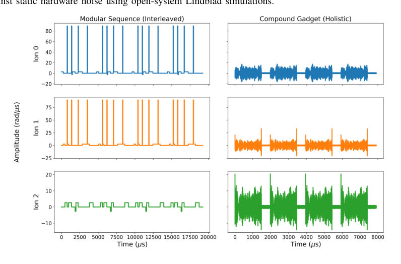
<figcaption class="paper-figure-caption"><b>Fig 2.</b> Fig. 2: Comparison of physical control schedules constructed by the modular baseline and the proposed compound gadget synthesis strategy for QSVT-based Hamiltonian simulation.</figcaption>
</figure>
<figure class="paper-figure-card">

<figcaption class="paper-figure-caption"><b>Fig 3.</b> Fig. 3: Hardware resilience evaluated via open-system purity decay (Tr(ρ2)) over a 3 ms execution window, comparing the baseline modular stitching against the proposed compound compilation.</figcaption>
</figure>
</div>

<p><strong>Summary.</strong> The paper proposes a novel, holistic method to compile complex quantum algorithms into continuous pulse gadgets directly suitable for trapped-ion hardware. By bypassing standard discrete gate stitching, this approach significantly compresses the required physical time and eliminates classical control overhead. This advancement promises to increase the computational depth achievable before decoherence limits are reached.</p>
<p><strong>Why it may be interesting.</strong> This work directly addresses the gap between abstract quantum algorithms (like QSVT) and the physical constraints of near-term hardware (trapped ions), offering a concrete pulse-level optimization technique crucial for realizing deep quantum computations in AMO systems.</p>
<details>
<summary>Detailed structure</summary>
<p><strong>Main problem.</strong> Standard gate-level transpilation introduces significant physical noise and overhead for high-precision quantum algorithms on trapped-ion hardware by treating operations as discrete units.</p>
<p><strong>Main result.</strong> The proposed holistic pulse synthesis strategy achieves significant temporal compression and eliminates control-layer latency compared to standard compilers, enabling deeper circuits within decoherence limits.</p>
<p><strong>Method.</strong> The authors use Gradient Ascent Pulse Engineering (GRAPE) to compile entire algorithmic blocks directly into continuous compound pulse gadgets, bypassing discrete gate stitching.</p>
<p><strong>Model / system.</strong> The work targets Hamiltonian simulation of the H2 molecule using a Quantum Singular Value Transformation (QSVT) circuit on a trapped-ion platform with 3 computational ions. The system dynamics are evaluated using noisy Lindblad master equation simulations.</p>
<p><strong>Key observables.</strong> Temporal compression of the pulse schedule duration, reduction in control-layer latency overhead, and state purity decay ($    ext{Tr}(
ho_2)$) under noise.</p>
<p><strong>Important parameters / regimes.</strong> The simulation is constrained by fundamental $T_2$ decoherence limits; the process involves block-encoding the problem into a QSVT circuit.</p>
<p><strong>Assumptions / limitations.</strong> Initial synthesis using GRAPE operates in a noiseless physical model, with robustness verified later via noisy Lindblad master equation simulations.</p>
<p><strong>Figures summary.</strong> Figure 1 illustrates the pulse-level compilation pipeline comparing modular vs. holistic methods; Figure 2 compares physical control schedules for QSVT simulation; Figure 3 shows hardware resilience by comparing purity decay over time.</p>
<p><strong>Paper structure.</strong> The paper first identifies the noise/overhead issue with discrete transpilation, then introduces the holistic pulse synthesis strategy using GRAPE to create compound gadgets. It applies this to H2 Hamiltonian simulation via QSVT and evaluates performance against noisy Lindblad simulations, demonstrating temporal compression and latency reduction.</p>
</details>
<details>
<summary>Abstract</summary>
<p>Standard gate-level transpilation introduces significant physical noise and overhead for high-precision quantum algorithms, such as the Quantum Singular Value Transformation (QSVT), on near-term trapped-ion hardware. Current compilers treat quantum operations as discrete units, forcing the physical control layer to execute highly fragmented laser pulses. To address this hardware-software disconnect, this work introduces a holistic pulse synthesis strategy that bypasses discrete gate-stitching to compile algorithms directly into continuous compound pulse gadgets. As a proof-of-concept, we target Hamiltonian simulation of the $H_2$ molecule, block-encoding the problem into a QSVT circuit to approximate the time-evolution operator $U = e^{-i H t}$ across 3 computational ions (2 system, 1 ancilla). We utilize the Gradient Ascent Pulse Engineering (GRAPE) algorithm to generate these compound gadgets and evaluate our methodology using noisy Lindblad master equation simulations. Preliminary observations indicate that the proposed strategy achieves significant temporal compression, reducing the total pulse schedule duration compared to standard compilers. Furthermore, synthesizing operations holistically eliminates the control-layer latency associated with discrete pulse lookup overhead. By streamlining the physical control schedule, this methodology offers a promising pathway to execute operations faster, highlighting the potential for compound gadgets to increase the computational depth achievable within fundamental $T_2$ decoherence limits.</p>
</details>
<p><sub><a href="#top">↑ back to top</a></sub></p>

<p><a id="paper-2607.01137"></a></p>
<h3 id="entanglement-spectrum-fingerprint-of-a-non-invertible-symmetry-the-kramers-wannier-duality-defect-on-the-lattice"><a href="http://arxiv.org/abs/2607.01137v1">Entanglement-spectrum fingerprint of a non-invertible symmetry: the Kramers--Wannier duality defect on the lattice</a></h3>
<p><strong>Authors:</strong> Yi Liang<br>
<strong>Type:</strong> theory · <strong>Category:</strong> statistical mechanics · <strong>PDF:</strong> <a href="https://arxiv.org/pdf/2607.01137v1">https://arxiv.org/pdf/2607.01137v1</a><br>
<strong>Analysis basis:</strong> full PDF text, analyzed in chunks
<strong>Topic relevance:</strong> 🔥 <code>entanglement &amp; information structure</code> <strong>4/5</strong> · <code>analog quantum simulation</code> <strong>2/5</strong> · <code>correlated / nonlocal dissipation</code> <strong>1/5</strong> · <code>driven-dissipative phase transition</code> <strong>1/5</strong> · <code>methods for driven-dissipative</code> <strong>1/5</strong> · <code>non-equilibrium dynamics</code> <strong>1/5</strong> · <code>non-equilibrium universality</code> <strong>1/5</strong></p>
<div class="figure-strip-hint">↔ Scroll figures horizontally</div>
<div class="paper-figures-scroll">
<figure class="paper-figure-card">

<figcaption class="paper-figure-caption"><b>Fig 1.</b> FIG. 1. Lattice reconstruction of the Ising KW duality-defect categorical data from a single duality-twisted ground state. (a) Boundary entropy: double extrapolation log g →1</figcaption>
</figure>
</div>

<p><strong>Summary.</strong> The paper develops a novel diagnostic tool to probe non-invertible symmetries by analyzing the single-particle entanglement spectrum of a quantum many-body system. Using the critical Ising chain with a KW defect as an example, the authors show that key topological invariants like the quantum dimension are encoded in specific spectral features, such as a maximally mixed zero mode ($\xi=0$). This establishes a powerful, level-resolved method for characterizing exotic phases.</p>
<p><strong>Why it may be interesting.</strong> This work provides a rigorous, quantitative method for diagnosing abstract topological properties (non-invertibility) directly from measurable quantum information quantities like entanglement spectra, which is highly relevant for characterizing exotic phases in condensed matter systems.</p>
<details>
<summary>Detailed structure</summary>
<p><strong>Main problem.</strong> To determine how the categorical data of a non-invertible symmetry, characterized by an irrational quantum dimension, manifests microscopically in the entanglement structure of a quantum many-body state.</p>
<p><strong>Main result.</strong> The full categorical data ($d_\sigma$, $h_\sigma$, and the twisted tower structure) is recovered from the single-particle entanglement spectrum ($\xi_k$) of the duality-twisted ground state, establishing a level-resolved spectral fingerprint superior to integrated entropy measures.</p>
<p><strong>Method.</strong> Analysis involves calculating the single-particle entanglement spectrum using free-fermion techniques on the critical Ising chain and comparing results derived from boundary entropy extrapolation and Casimir curvature calculations.</p>
<p><strong>Model / system.</strong> The study focuses on the critical Ising chain subjected to a Kramers–Wannier (KW) duality defect. The system is analyzed using its free-fermion representation, allowing for exact solvability benchmarks.</p>
<p><strong>Key observables.</strong> Single-particle entanglement spectrum ($\xi_k$), Boundary Entropy ($\log g$), Quantum Dimension ($d_\sigma = \sqrt{2}$), and Twist-Field Weight ($h_\sigma = 1/16$).</p>
<p><strong>Important parameters / regimes.</strong> The defect strength, the system size $L$, and the specific values derived from the Ising model's free-fermion structure.</p>
<p><strong>Assumptions / limitations.</strong> All exact results rely on the free-fermion solvability of the critical Ising model; numerical calculations use standard double-precision linear algebra techniques.</p>
<p><strong>Figures summary.</strong> Figures illustrate the reconstruction process: (a) Boundary entropy extrapolation yielding $1/2 \ln 2$; (b) Entanglement spectrum showing a zero mode ($\xi=0$) for the defect vs. homogeneous chain; and (c) Casimir fit confirming $h_{	ext{dual}} = 1/16$.</p>
<p><strong>Paper structure.</strong> The paper establishes the problem by noting that non-invertible symmetries require spectral analysis beyond integrated quantities. It then applies this to the KW defect on the Ising chain, using multiple independent diagnostic tools (spectrum, entropy, curvature) to confirm the categorical data.</p>
</details>
<details>
<summary>Abstract</summary>
<p>Non-invertible symmetries are characterized by topological defects of irrational quantum dimension, but their imprint on the entanglement of a quantum many-body state has not been resolved at the level of the spectrum. We show that the categorical data of the canonical example -- the Kramers--Wannier (KW) duality defect of the critical Ising chain, with quantum dimension d_sigma=sqrt(2) -- is encoded in the single-particle entanglement spectrum of its ground state: a maximally mixed Majorana zero mode is the spectral origin of the boundary entropy log g=(1/2)log 2, hence of d_sigma itself. Reading the same duality-twisted ground state along two independent routes -- the transfer-matrix momentum shift and the Casimir curvature of the energy -- pins the twist-field weight h_sigma=1/16 twice over, and the defect Hilbert space organizes into a half-integer sigma-twisted conformal tower. This promotes the boundary entropy from an integrated number to a level-resolved spectral signature of non-invertibility, and supplies an exactly solvable calibration target for tensor-network studies of duality defects that lack a free-fermion shortcut.</p>
</details>
<p><sub><a href="#top">↑ back to top</a></sub></p>

<p><a id="paper-2607.00532"></a></p>
<h3 id="strongly-frustrated-2d-magnetism-in-a-3d-hexagonal-perovskite"><a href="http://arxiv.org/abs/2607.00532v1">Strongly frustrated 2D magnetism in a 3D hexagonal perovskite</a></h3>
<p><strong>Authors:</strong> Bocheng Yu, Otkur Omar, Songtai Lv, Long Ma, Zhengcai Xia, Jing Meng, Yanran Yang, Jie Ma, Yang Xu, Qingfeng Zhan, Vladimir Yu. Pomjakushin, Haiyuan Zou, Shang Gao, Toni Shiroka, Tian Shang<br>
<strong>Type:</strong> both · <strong>Category:</strong> strongly correlated electrons · <strong>PDF:</strong> <a href="https://arxiv.org/pdf/2607.00532v1">https://arxiv.org/pdf/2607.00532v1</a><br>
<strong>Analysis basis:</strong> full PDF text, analyzed in chunks
<strong>Topic relevance:</strong> 🔥 <code>analog quantum simulation</code> <strong>4/5</strong> · <code>exotic spin models in light-matter</code> <strong>3/5</strong> · <code>Keldysh / 2PI / non-Gaussian methods</code> <strong>1/5</strong> · <code>entanglement &amp; information structure</code> <strong>1/5</strong> · <code>methods for driven-dissipative</code> <strong>1/5</strong> · <code>spintronics-quantum-optics interface</code> <strong>1/5</strong></p>
<div class="figure-strip-hint">↔ Scroll figures horizontally</div>
<div class="paper-figures-scroll">
<figure class="paper-figure-card">
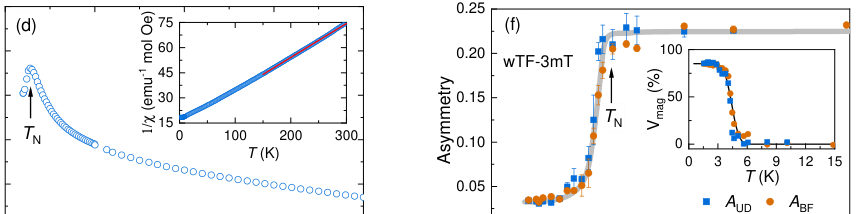
<figcaption class="paper-figure-caption"><b>Fig 1.</b> FIG. 1. (a) Crystal structure of Ba2La2BB′ 2O12 (B = Co, Ni, Mn; B′ = W, Te, Re). (b) Triangular sublattice of the magnetic B ions. (c) Pathways of the B-O-B′-O-B (black solid lines) and B-O-O-B (black dashed lines) superexchange interactions. (d) Temperature-dependent magnetic susceptibility χ(T) for BLMTO collected in a field of 50 mT. The inset shows the inverse susceptibility 1/χ(T). The red solid line represents a fit to the Curie-Weiss law. (e) Temperature-dependent specific heat C(T)/T (left-axis) and magnetic entropy Sm(T) (right-axis) of BLMTO. The magnetic specific heat was obtained by subtracting the specific heat of the nonmagnetic Ba2La2ZnTe2O12 (BLZTO) (empty circles and...</figcaption>
</figure>
<figure class="paper-figure-card">
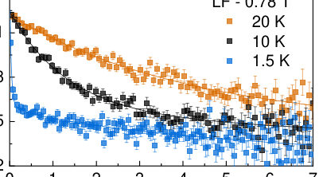
<figcaption class="paper-figure-caption"><b>Fig 2.</b> FIG. 4. LF-µSR spectra collected in a magnetic field of 0.78 T at selected temperatures, covering both the AFM and PM states of BLMTO. Solid lines are fits to Eq. (2). The applied magnetic field is parallel to the muon-spin direction. The LF-µSR spectra collected at T = 60 K in different magnetic fields are shown in Fig. S10 [32].</figcaption>
</figure>
<figure class="paper-figure-card">

<figcaption class="paper-figure-caption"><b>Fig 3.</b> FIG. 5. (a) NPD patterns collected at T = 1.5, 10, and 300 K reveal asymmetric magnetic Bragg peaks with q = (1/3, 1/3, 0), (2/3, 2/3, 0), and (1/3, 4/3, 0) (marked by arrows). (b) Comparison of experimental- and simulated NPD spectra. Upper panel: experimental data at 10 K is fitted using the J1-J2-Jc model through the SCGA method. Lower panel: experimental data at 1.5 K and the simulated pattern calculated using the fitted J1-J2-Jc model through classical Monte Carlo simulations. (c) Simulated diffuse neutron scattering patterns in the (h, k, 0) and (h, h, l) planes using the fitted J1-J2-Jc calculated from the SCGA method at 10 K. (d) Temperature dependence of the reduced magnetic...</figcaption>
</figure>
<figure class="paper-figure-card">
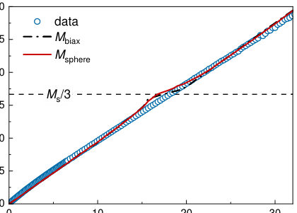
<figcaption class="paper-figure-caption"><b>Fig 4.</b> FIG. 6. Field-dependent magnetization M(H) collected at T = 1.8 K in magnetic fields up to 32 T (data up to 49 T are presented in Fig. S12 [32]). Red solid and black dash-dotted lines represent the calculated magnetization using spherical (Msphere) and weighted- biaxial averages (Mbiax), respectively. The dashed horizontal line denotes the Ms/3 magnetization plateau.</figcaption>
</figure>
<figure class="paper-figure-card">

<figcaption class="paper-figure-caption"><b>Fig 5.</b> Fig. 6, the magnetization is almost linear in field, confirming the absence of magnetization plateaus and UUD phases in BLMTO. Since both J2 and Jc are much weaker than J1, we employ the nearest-neighbor (NN) TL-X X Z model to calcu- late the magnetization of BLMTO. This model is described by the Hamiltonian:</figcaption>
</figure>
</div>

<p><strong>Summary.</strong> This work reports on Ba2La2MnTe2O12, demonstrating it hosts an exotic state of strongly frustrated 2D magnetism within its 3D perovskite host. By combining advanced measurements like $\mu$SR and neutron scattering with theoretical modeling, the authors confirm a $120^\circ$ AFM order confined to the ab-plane, providing new insight into dimensionality effects on quantum magnetic states.</p>
<p><strong>Why it may be interesting.</strong> The interplay between dimensionality, geometric frustration, and emergent low-dimensional quantum magnetism in a solid-state material is highly relevant for understanding strongly correlated electron systems where simple mean-field theories fail.</p>
<details>
<summary>Detailed structure</summary>
<p><strong>Main problem.</strong> The study investigates the exotic magnetic ground state of a specific hexagonal perovskite, aiming to understand how strong geometric frustration leads to quasi-two-dimensional magnetism within a three-dimensional crystal structure.</p>
<p><strong>Main result.</strong> The material exhibits an antiferromagnetic transition characterized by ideal 2D magnetism in the ab-plane while remaining disordered along the c-axis. This state is associated with significant magnetic frustration, challenging simple interpretations of 3D magnetic order.</p>
<p><strong>Method.</strong> A combination of experimental techniques (NMR, neutron scattering, muon-spin spectroscopy) and theoretical modeling (tensor network approach, SCGA) was employed to characterize the spin correlations and magnetic structure.</p>
<p><strong>Model / system.</strong> The physical system is Ba2La2MnTe2O12, a triangular-lattice magnet belonging to the hexagonal perovskite family. The magnetism arises from Mn2+ moments interacting via superexchange paths, leading to strong frustration on the triangular lattice.</p>
<p><strong>Key observables.</strong> Magnetic susceptibility (chi(T)), specific heat (C(T)/T), muon asymmetry (ANM), and magnetic Bragg peaks in NPD patterns.</p>
<p><strong>Important parameters / regimes.</strong> The system exhibits a transition temperature near 3-4.4 K, and the frustration ratio was calculated to be high (f=14.2).</p>
<p><strong>Assumptions / limitations.</strong> The analysis assumes that the observed magnetism is dominated by ideal 2D behavior despite the 3D crystal structure, and theoretical modeling uses effective Hamiltonian approximations.</p>
<p><strong>Figures summary.</strong> Figures illustrate crystal structures, magnetic transitions via susceptibility/specific heat, spin dynamics using muon-spin relaxation rates (ZF and LF), and diffraction patterns confirming magnetic ordering vectors.</p>
<p><strong>Paper structure.</strong> The paper systematically presents evidence from multiple techniques: structural characterization, bulk measurements ($\chi(T)$, $C(T)$), local probes ($    ext{NMR}$, $\mu	ext{SR}$), and advanced modeling (SCGA/Tensor Networks) to build a comprehensive picture of the 2D magnetic order within the 3D lattice.</p>
</details>
<details>
<summary>Abstract</summary>
<p>Exotic quantum phenomena are often found to occur in spin systems that exhibit low-dimensional magnetism. By combining nuclear magnetic resonance, neutron scattering, and muon-spin spectroscopy ($μ$SR) techniques, we report a rare instance of strongly frustrated two-dimensional (2D) magnetism in a three-dimensional (3D) hexagonal perovskite. Here, Ba$_2$La$_2$MnTe$_2$O$_{12}$, a triangular-lattice magnet, is shown to undergo a magnetic transition at $T_\mathrm{N} \approx$ 4.4 K, below which the manganese moments form a 120$^{\circ}$ AFM order within the $ab$-plane, while staying disordered along the $c$-axis. This exotic ground state, which exhibits ideal 2D magnetism, is highly consistent with the persistently strong spin fluctuations and the large internal field distributions revealed by zero-field $μ$SR. Further, the 2D magnetism also leads to a significant frustration, much larger than that of most known magnetically-ordered frustrated systems. Our work on Ba$_2$La$_2$MnTe$_2$O$_{12}$ not only challenges the interpretations of magnetic order in other 3D hexagonal perovskites, but it also provides insight into how the dimensionality affects the exotic magnetic states.</p>
</details>
<p><sub><a href="#top">↑ back to top</a></sub></p>

<p><a id="paper-2607.00398"></a></p>
<h3 id="holographic-quantum-transformer-a-generalist-neuro-symbolic-architecture-for-solving-frustrated-systems-via-generative-attention"><a href="http://arxiv.org/abs/2607.00398v1">Holographic Quantum Transformer: A Generalist Neuro-Symbolic Architecture for Solving Frustrated Systems via Generative Attention</a></h3>
<p><strong>Authors:</strong> Xingran Guo, Tiaojie Xiao, Jie Liu, Keqin Li<br>
<strong>Type:</strong> both · <strong>Category:</strong> strongly correlated electrons · <strong>PDF:</strong> <a href="https://arxiv.org/pdf/2607.00398v1">https://arxiv.org/pdf/2607.00398v1</a><br>
<strong>Analysis basis:</strong> full PDF text, analyzed in chunks
<strong>Topic relevance:</strong> 🔥 <code>analog quantum simulation</code> <strong>4/5</strong> · <code>exotic spin models in light-matter</code> <strong>3/5</strong> · <code>entanglement &amp; information structure</code> <strong>1/5</strong> · <code>methods for driven-dissipative</code> <strong>1/5</strong> · <code>non-equilibrium dynamics</code> <strong>1/5</strong></p>
<div class="figure-strip-hint">↔ Scroll figures horizontally</div>
<div class="paper-figures-scroll">
<figure class="paper-figure-card">

<figcaption class="paper-figure-caption"><b>Fig 1.</b> Figure 1: Overview of HQT. (A) Holographic Embedding injects geometry. (B) Quantum Encoder uses global attention to resolve frustration (𝐽2). (C) Autoregressive Head generates the wavefunction Ψ(x).</figcaption>
</figure>
<figure class="paper-figure-card">
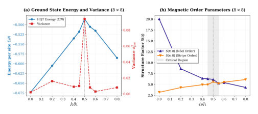
<figcaption class="paper-figure-caption"><b>Fig 2.</b> Figure 2: Detecting Quantum Phase Transitions on the 8 × 8 Lattice. (a) The energy per site (𝐸/𝑁) reaches its least negative value and the variance 𝜎2 𝐸/𝑁shows a relative spike at the critical point 𝐽2 = 0.5, signaling maximal frustration and optimization landscape ruggedness. (b) The crossing of the Néel structure factor 𝑆(𝜋, 𝜋) and the Stripe structure factor 𝑆(𝜋, 0) physically confirms the transition from the Néel phase to a highly frustrated critical phase.</figcaption>
</figure>
<figure class="paper-figure-card">

<figcaption class="paper-figure-caption"><b>Fig 3.</b> Figure 3: Zero-Shot Size Extrapolation via Holographic Trans- fer (8 × 8 →10 × 10). The red curve (Holographic Transfer) shows rapid alignment and improved stability relative to the Cold Start baseline (blue). After unfreezing the backbone (Iter 50), the transfer model converges to 𝐸/𝑁≈−0.49782, improving over the Cold Start baseline (−0.4974) and reach- ing a value statistically consistent with the best reported from-scratch result (−0.4976921(4) [3]). This indicates that the holographic prior provides a high-fidelity initialization and helps the model avoid poor local minima even in a sub- stantially expanded Hilbert space.</figcaption>
</figure>
<figure class="paper-figure-card">

<figcaption class="paper-figure-caption"><b>Fig 4.</b> Figure 4: Holographic Attention Maps on the 8×8 Lattice (𝐽2 = 0.5). (a) The full 64 × 64 attention matrix exhibits distinct off- diagonal stripes, indicating that the model has autonomously learned the 2D topology and periodic boundary conditions (PBC) from flattened 1D sequences. (b) The spatial attention distribution relative to the central reference site (white star). The highest intensities are autonomously assigned to the diagonal sites (distance √</figcaption>
</figure>
</div>

<p><strong>Summary.</strong> The authors introduce the Holographic Quantum Transformer (HQT), an AI architecture designed to simulate frustrated quantum magnets like the J1-J2 Heisenberg model. HQT uses generative attention and physical priors to overcome the sign problem, achieving high accuracy. Its key contribution is 'Holographic Transfer,' a zero-shot protocol that allows accurate extrapolation of results from small to large lattices without retraining.</p>
<p><strong>Why it may be interesting.</strong> This work presents a powerful AI paradigm that directly tackles fundamental challenges in condensed matter physics—namely, simulating strongly correlated systems where traditional numerical methods fail due to the sign problem or exponential scaling.</p>
<details>
<summary>Detailed structure</summary>
<p><strong>Main problem.</strong> Simulating two-dimensional frustrated quantum matter, such as the J1-J2 Heisenberg model, is computationally intractable due to the sign problem and exponential Hilbert space complexity.</p>
<p><strong>Main result.</strong> The Holographic Quantum Transformer (HQT) achieves near state-of-the-art ground-state energies on large lattices via a zero-shot extrapolation protocol, demonstrating transferable quantum simulation capabilities.</p>
<p><strong>Method.</strong> It employs a generative, neuro-symbolic architecture using global self-attention to model the wavefunction amplitude autoregressively, mitigating the sign problem by incorporating classical physical priors.</p>
<p><strong>Model / system.</strong> The study focuses on the 2D antiferromagnetic J1-J2 Heisenberg model on a square lattice. The Hamiltonian includes nearest-neighbor (J1) and next-nearest-neighbor (J2) interactions, with maximal frustration occurring near J2/J1 = 0.5.</p>
<p><strong>Key observables.</strong> Ground-state energy per site (E/N), attention maps showing learned spin correlations, and autocorrelation time ($\tau$).</p>
<p><strong>Important parameters / regimes.</strong> Frustration parameter $J_2$ (especially at $J_2=0.5$), lattice sizes ($8 \times 8$, $10 \times 10$), and coupling constants $J_1, J_2$.</p>
<p><strong>Assumptions / limitations.</strong> The method assumes that global self-attention can capture the necessary long-range entanglement structure (holographic view) and relies on bilinear interpolation for zero-shot size extrapolation.</p>
<p><strong>Figures summary.</strong> Figures illustrate the architecture components, attention maps showing alignment with physical interactions (e.g., J2 diagonals), and comparisons of energy convergence between 'Cold Start' and 'Holographic Transfer' protocols across lattice sizes.</p>
<p><strong>Paper structure.</strong> The paper introduces HQT as a generative model for quantum states, details its autoregressive structure incorporating physical priors (Marshall sign rule), validates it on the $J_1-J_2$ model using finite-size scaling analysis, and culminates in demonstrating 'Holographic Transfer' for zero-shot extrapolation.</p>
</details>
<details>
<summary>Abstract</summary>
<p>Simulating two-dimensional frustrated quantum matter is a grand challenge due to the sign problem and exponential Hilbert space complexity. In this work, we introduce the Holographic Quantum Transformer (HQT), a physics-inspired generative architecture that leverages global self-attention to resolve non-local entanglement patterns. We validate HQT on the square lattice $J_1-J_2$ Heisenberg model. On the heavily frustrated $8 \times 8$ lattice at the quantum critical point ($J_2=0.5$), HQT reaches a ground-state energy per site ($E/N$) of $\mathbf{-0.5001(1)}$, consistent with the expected finite-size scaling trend. Beyond numerical accuracy, HQT exhibits intrinsic physical awareness, autonomously recovering the underlying $J_2$ interaction geometry through interpretable attention maps. Our central contribution is ``Holographic Transfer", a zero-shot size-extrapolation protocol with rapid alignment: a model trained on $8 \times 8$ systems is directly projected onto larger $10 \times 10$ lattices via continuous positional-embedding interpolation and head re-initialization, achieving high-fidelity initialization and rapid convergence. This zero-shot protocol yields an energy of $E/N = \mathbf{-0.49782(3)}$, statistically consistent with the variational state of the art while requiring no from-scratch training on the target lattice. Our results establish generative attention as a scalable paradigm for transferable quantum simulation.</p>
</details>
<p><sub><a href="#top">↑ back to top</a></sub></p>

<p><a id="paper-2607.01037"></a></p>
<h3 id="quantum-informed-portfolio-selection-an-end-to-end-pipeline-validated-on-trapped-ion-hardware-with-real-market-data"><a href="http://arxiv.org/abs/2607.01037v1">Quantum-Informed Portfolio Selection: An End-to-End Pipeline Validated on Trapped-Ion Hardware with Real Market Data</a></h3>
<p><strong>Authors:</strong> Romina Yalovetzky, Martin J. A. Schuetz, Zichang He, Jiayu Shen, Yue Sun, Rudy Raymond, Shauna Sahay, Kishore Perla, Ruben S. Andrist, Grant Salton, Helmut G. Katzgraber, Roger Bongiovanni, Niraj Kumar, Rob Otter<br>
<strong>Type:</strong> both · <strong>Category:</strong> disordered systems and neural networks · <strong>PDF:</strong> <a href="https://arxiv.org/pdf/2607.01037v1">https://arxiv.org/pdf/2607.01037v1</a><br>
<strong>Analysis basis:</strong> full PDF text, analyzed in chunks
<strong>Topic relevance:</strong> 🔥 <code>QC/QI experiment</code> <strong>4/5</strong> · <code>quantum measurements</code> <strong>3/5</strong> · <code>analog quantum simulation</code> <strong>1/5</strong> · <code>exotic spin models in light-matter</code> <strong>1/5</strong> · <code>measurement-induced transitions</code> <strong>1/5</strong></p>
<div class="figure-strip-hint">↔ Scroll figures horizontally</div>
<div class="paper-figures-scroll">
<figure class="paper-figure-card">

<figcaption class="paper-figure-caption"><b>Fig 1.</b> FIG. 1. End-to-end pipeline for quantum-informed portfolio selection given a universe of N assets. The input asset (or market) graph is generated from the correlation matrix C based on the assets’ returns across T timestamps (diagrammatically shown in the table) and the correlation threshold λ. This graph defines the input to the hybrid (recursive) qReduMIS algorithm to solve the PSP-MIS problem. qReduMIS intermixes exact reduction (in polynomial time) executed on classical hardware (CPU) and sampling of frozen nodes on the QPU, as to unblock the classical exact reduction wrapper when necessary. The set of frozen nodes is identified from quantum measurements (indicated as the output...</figcaption>
</figure>
<figure class="paper-figure-card">

<figcaption class="paper-figure-caption"><b>Fig 2.</b> FIG. 2. Schematic of the qReduMIS algorithm on an 8-node graph G (illustrative; not experimental data). (a) Original graph G. (b) Classical reduction: vertex 1 (degree 1) is selected; its neighbour 2 is removed. (c) The kernel K (orange) is forwarded to the quantum subroutine. (d) QAOA is executed on K (violet); measured independent sets and counts are shown in the inset. (d’) Marginal probabilities computed from the measurements reveal node 4 as the top-ranked node. Following a greedy strategy over the marginals, it is selected and its neighbours {3, 5} removed, triggering a new classical reduction. In practice, ties in marginal probability are broken at random. (e) Classical reduction...</figcaption>
</figure>
<figure class="paper-figure-card">

<figcaption class="paper-figure-caption"><b>Fig 3.</b> FIG. 3. Performance comparison of standalone QAOA (blue) and qReduMIS (green) on the first kernel K for four stock market indices (DAX, FTSE, S&amp;P 100, Nikkei 225). Left: Success probability; Right: Average approximation ratio ⟨AR⟩. Error bars indicate 95% bootstrap confidence intervals obtained via 10,000 resamples. For S&amp;P 100 and Nikkei 225, standalone QAOA achieves PMIS = 0. qReduMIS consistently achieves higher success probability, and near-optimal approximation ratio across all indices. Standalone QAOA uses 100 quantum shots; qReduMIS uses 20 classical trials with 10 quantum shots per QPU call, requiring no more than five QPU calls. All experiments use p = 2 QAOA layers on Quantinuum’s...</figcaption>
</figure>
<figure class="paper-figure-card">

<figcaption class="paper-figure-caption"><b>Fig 4.</b> Fig. 3 presents two figures of merit—end-to-end success probability and average approximation ratio ⟨AR⟩—for each stock market index. All point estimates are accom- panied by 95% bootstrap confidence intervals. We em- ploy an enhanced postprocessing strategy that not only removes constraint-violating nodes but also greedily rein- serts non-conflicting ones. This grants standalone QAOA an additional advantage, since qReduMIS does not rely on sampling the optimal solution directly but rather on identifying frozen nodes via measurement statistics. De- spite this enhanced postprocessing, standalone QAOA fails to sample the optimal solution within 100 shots for</figcaption>
</figure>
<figure class="paper-figure-card">
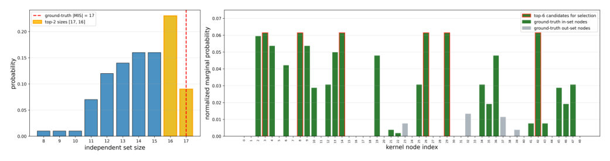
<figcaption class="paper-figure-caption"><b>Fig 5.</b> FIG. 4. QAOA measurements on the DAX 100 kernel (|K| = 49 nodes, 100 shots on Quantinuum Helios) reveal a strong frozen- node signal despite low success probability. Left: Probability distribution over independent-set sizes from standalone QAOA; the dashed red line marks the ground-truth |MIS| and yellow bins indicate the top-2 largest sizes measured. The probability of sampling the optimal solution is below 10%. Right: Normalized marginal probability of each kernel node, computed over the top-2 largest independent sets (yellow bins on left panel). Green bars indicate in-set nodes (belonging to at least one MIS) and grey bars indicate out-set nodes (absent from all MIS solutions)....</figcaption>
</figure>
</div>

<p><strong>Summary.</strong> This work proposes qReduMIS, a hybrid algorithm that combines classical graph reduction with QAOA executed on trapped-ion hardware to solve the computationally hard Maximum Independent Set problem derived from financial correlation data. The results demonstrate that this quantum-informed approach significantly outperforms standalone QAOA by iteratively refining the search space using measured 'frozen nodes,' making it a powerful tool for large-scale optimization.</p>
<p><strong>Why it may be interesting.</strong> While the application is finance, the methodology—using quantum measurements to guide provably optimal classical solvers for NP-hard problems—is highly relevant to general optimization techniques in condensed matter physics (e.g., spin glass models or frustrated magnetic systems).</p>
<details>
<summary>Detailed structure</summary>
<p><strong>Main problem.</strong> The core problem is solving Portfolio Selection, which maps to finding a Maximum Independent Set (MIS) on asset correlation graphs. This is an NP-hard combinatorial optimization task.</p>
<p><strong>Main result.</strong> The proposed hybrid algorithm, qReduMIS, significantly outperforms standalone QAOA by leveraging quantum measurements to guide provably optimal classical graph reductions. It shows superior success probabilities and better scaling exponents for solving real-world market data instances.</p>
<p><strong>Method.</strong> qReduMIS is an end-to-end pipeline combining classical kernelization/reduction techniques with the Quantum Approximate Optimization Algorithm (QAOA) executed on a quantum processor to identify 'frozen nodes'.</p>
<p><strong>Model / system.</strong> The problem is formulated as a QUBO Hamiltonian, and experiments are conducted on Quantinuum's 98-qubit trapped-ion Helios system and its noisy emulator. The graph structure is derived from real financial correlation matrices.</p>
<p><strong>Key observables.</strong> End-to-end success probability (PMIS), average approximation ratio ($\langle AR 
angle$), and optimal time-to-solution scaling exponent ($ ext{optTTS}$).</p>
<p><strong>Important parameters / regimes.</strong> Number of QAOA layers ($p=2, 6$), number of qubits (up to 98), correlation threshold ($\lambda$), and kernel graph size ($K$).</p>
<p><strong>Assumptions / limitations.</strong> The success of qReduMIS relies on the assumption that marginal probabilities from QAOA measurements are sufficient to identify 'frozen nodes,' even if the optimal solution itself is rarely sampled.</p>
<p><strong>Figures summary.</strong> Figures compare performance metrics (Success Probability vs. Hardness $H$) between standalone QAOA and qReduMIS across multiple indices, showing qReduMIS's consistent advantage in both reliability and scaling.</p>
<p><strong>Paper structure.</strong> The paper introduces the MIS formulation of portfolio selection, details the hybrid qReduMIS pipeline (classical reduction $
ightarrow$ quantum sampling $
ightarrow$ classical refinement), benchmarks this against standalone QAOA on real market data, and finally analyzes the computational scaling exponents using emulators.</p>
</details>
<details>
<summary>Abstract</summary>
<p>Portfolio diversification - a cornerstone of modern investment management - can be formulated as a Maximum Independent Set (MIS) problem on asset correlation graphs. Solving this problem at scale is computationally challenging, motivating the exploration of quantum algorithms for practical financial optimization. We propose an end-to-end pipeline leveraging qReduMIS, a recursive hybrid quantum-classical algorithm. Rather than using quantum optimization to directly produce a final solution, qReduMIS leverages independent set measurements from the Quantum Approximate Optimization Algorithm (QAOA) to identify frozen nodes - vertices likely to belong to optimal solutions - thereby guiding and unblocking subsequent (provably optimal) classical reductions on the remaining graph. We benchmark qReduMIS on real financial data from four major market indices with up to 225 assets, executing experiments on Quantinuum's 98-qubit trapped-ion Helios system, with QAOA circuits acting on kernels of up to 78 qubits and 1016 two-qubit gates. While standalone QAOA fails to find the optimal solution for two of the largest indices (S&amp;P 100 and Nikkei 225), qReduMIS achieves success probabilities of $0.40$ and $0.95$, respectively, with average approximation ratios $\geq 0.96$ across all four indices. We perform a systematic benchmark on the Quantinuum H2-1 noisy emulator over 73 asset correlation graphs of varying size showing that, for $p=2$ QAOA layers, the optimal time-to-solution scaling exponent of qReduMIS is $3.2$ times smaller than that of standalone QAOA.</p>
</details>
<p><sub><a href="#top">↑ back to top</a></sub></p>

<p><a id="paper-2607.01062"></a></p>
<h3 id="chiral-enhancement-of-two-magnon-bound-states-in-an-math278math-triangular-lattice-magnet"><a href="http://arxiv.org/abs/2607.01062v1">Chiral enhancement of two-magnon bound states in an $S=1/2$ triangular-lattice magnet</a></h3>
<p><strong>Authors:</strong> László Rudner, Karlo Penc<br>
<strong>Type:</strong> theory · <strong>Category:</strong> strongly correlated electrons · <strong>PDF:</strong> <a href="https://arxiv.org/pdf/2607.01062v1">https://arxiv.org/pdf/2607.01062v1</a><br>
<strong>Analysis basis:</strong> full PDF text, analyzed in chunks
<strong>Topic relevance:</strong> 🔥 <code>analog quantum simulation</code> <strong>4/5</strong> · 🔥 <code>exotic spin models in light-matter</code> <strong>4/5</strong> · <code>spintronics-quantum-optics interface</code> <strong>1/5</strong></p>
<div class="figure-strip-hint">↔ Scroll figures horizontally</div>
<div class="paper-figures-scroll">
<figure class="paper-figure-card">
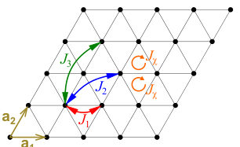
<figcaption class="paper-figure-caption"><b>Fig 1.</b> FIG. 1. Triangular lattice showing the J1 first-, J2 second-, and J3 third-neighbor Heisenberg exchanges, as well as the scalar-chirality terms ˆχijk on the up- and down-pointing tri- angles. The circular arrows define the orientation of the or- dered sites i, j, and k around each triangle. The primitive lattice vectors are a1 = (1, 0) and a2 = (1/2, √</figcaption>
</figure>
<figure class="paper-figure-card">

<figcaption class="paper-figure-caption"><b>Fig 2.</b> FIG. 2. Brillouin zone of the triangular lattice with the in- equivalent Γ, K, and M points and high-symmetry lines. We also illustrate the q = (q, 0) line in Eq. (23) that connect Γ, K, and M ′′ point in straight line.</figcaption>
</figure>
<figure class="paper-figure-card">
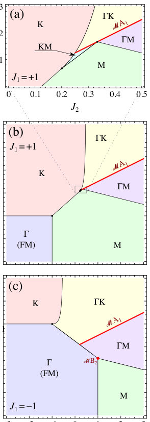
<figcaption class="paper-figure-caption"><b>Fig 3.</b> FIG. 3. Luttinger–Tisza phase diagram of the triangular- lattice J1-J2-J3 Heisenberg model. Panels (a) and (b) show the antiferromagnetic nearest-neighbor case, J1 = +1, with panel (a) giving an enlarged view of the central region of panel (b). Panel (c) shows the ferromagnetic nearest-neighbor case, J1 = −1. Colors indicate the ordering wave vector q at which Jq is minimized. They distinguish the commensu- rate Γ, K, and M regions from incommensurate spiral regions whose minima lie on the high-symmetry lines ΓK, ΓM, and KM. Equivalently, these wave vectors are the momenta at which the single-magnon dispersion softens. The thick red line marks the J2 = 2J3 locus associated with the MA1 min-...</figcaption>
</figure>
<figure class="paper-figure-card">

<figcaption class="paper-figure-caption"><b>Fig 4.</b> FIG. 4. Action of the uniform scalar spin chirality interac- tion 4(ˆχ123 + ˆχ134) = i ˆP123 −i ˆP132 +i ˆP134 −i ˆP143 for spin-1/2 one- and two-magnon states; see Eq. (7). Empty circles de- note up spins and filled circles down spins. Colored triangles indicate the permutation terms that act nontrivially on the displayed spin configuration; the color encodes the sign of the imaginary amplitude, with magenta denoting −i and green +i. (a) In the one-magnon sector, the down spin on site 1 can hop to site 3 through two oriented triangles, correspond- ing to the processes −i ˆP132 and +i ˆP134. These two ampli- tudes cancel, so the scalar-chirality term does not contribute to the one-magnon...</figcaption>
</figure>
<figure class="paper-figure-card">

<figcaption class="paper-figure-caption"><b>Fig 5.</b> FIG. 6. Scan of the momentum and the gap of the lowest energy bound state in the J2-J3 parameter space for (a) fer- romagnetic and (b) antiferromagnetic J1 exchanges. We use Eq. (70) to calculate the gap ∆with energies from an exact di- agonalization calculation of a 3×242 = 1728-site cluster. The lowest energy bound state is mostly at the K = Γ point, while there are some regions where it is at the M point, and at in- commensurate values where the minima of the single magnon dispersion are also incommensurate, in the ΓK or ΓM phase. The largest value of the gap is at (J1, J2, J3) = (−1, 1, −1/2) and (1, −1, −1). The thin orange lines denote the boundary of the ferromagnetic phase, and the...</figcaption>
</figure>
</div>

<p><strong>Summary.</strong> This theoretical study examines the role of scalar spin chirality in stabilizing two-magnon bound states within a triangular-lattice magnet. The authors show that this chiral interaction acts as an effective, symmetry-breaking coupling in the two-magnon sector, selectively strengthening binding energy for one specific excitation channel. This mechanism provides a microscopic route to understanding high-field spin-nematic instabilities.</p>
<p><strong>Why it may be interesting.</strong> The explicit derivation of how a geometric/topological term like scalar chirality can selectively modify low-energy excitations (two-magnon bound states) while leaving single-particle physics untouched is highly relevant for understanding emergent quantum phases in frustrated magnets.</p>
<details>
<summary>Detailed structure</summary>
<p><strong>Main problem.</strong> The study investigates how scalar spin chirality influences two-magnon bound states in a frustrated triangular-lattice magnet.</p>
<p><strong>Main result.</strong> Scalar chirality selectively enhances the binding of one specific two-magnon channel by splitting degenerate symmetry components, without altering the single-magnon spectrum.</p>
<p><strong>Method.</strong> The analysis uses gap equations derived from partial-wave decomposition and is confirmed via exact diagonalization on finite clusters.</p>
<p><strong>Model / system.</strong> The system is an S=1/2 triangular-lattice Heisenberg magnet described by $J_1, J_2, J_3$ exchange interactions augmented by a uniform scalar-chirality interaction ($\hat{H}_{	ext{Chir}}$).</p>
<p><strong>Key observables.</strong> Two-magnon binding energy (gap), one-magnon dispersion minima, and the spin-nematic order parameter.</p>
<p><strong>Important parameters / regimes.</strong> Exchange couplings ($J_1, J_2, J_3$), external magnetic field ($h$), and the chirality coupling strength ($J_\chi$).</p>
<p><strong>Assumptions / limitations.</strong> The analysis is performed in the high-field limit above the fully polarized state; two-magnon calculations are treated via partial-wave decomposition.</p>
<p><strong>Figures summary.</strong> Figures illustrate the lattice structure, Brillouin zone, Luttinger-Tisza phase diagrams mapping magnetic ordering regimes, and momentum-resolved spectra showing enhanced bound states due to chirality.</p>
<p><strong>Paper structure.</strong> The paper first establishes the Hamiltonian including exchange and chirality terms. It analyzes the one-magnon sector (showing no effect from chirality) before focusing on the two-magnon sector. The core methodology involves deriving a finite-dimensional gap equation using symmetry harmonics, which reveals the selective enhancement mechanism.</p>
</details>
<details>
<summary>Abstract</summary>
<p>We study one- and two-magnon excitations above the fully polarized state of the spin-$1/2$ triangular-lattice $J_1$-$J_2$-$J_3$ Heisenberg model with an additional uniform scalar-chirality interaction. In the one-magnon sector of the Heisenberg model, we identify two special minimum manifolds by rewriting the dispersion in complete-square form. The scalar-chirality term cancels exactly in this sector, leaving the one-magnon dispersion and the single-magnon instability unchanged. In contrast, it survives in the two-magnon sector as an oriented interaction between neighboring flipped spins. Using symmetry-adapted triangular-lattice harmonics, we derive finite-dimensional gap equations at the $Γ$ point in the symmetry-resolved $\mathsf{A_1}$ and $\mathsf{E_2}$-type partial-wave channels. The chirality coupling splits the two opposite relative-motion chiralities in the $\mathsf{E_2}$-type sector, thereby selectively enhancing one two-magnon bound-state channel. Exact diagonalization confirms this mechanism and reveals enhanced binding, as well as additional bound states at $M$ and at incommensurate total momenta. Our results identify scalar chirality as an efficient microscopic mechanism for strengthening two-magnon binding without shifting the one-magnon spectrum, and provide a route toward high-field spin-nematic and multipolar instabilities.</p>
</details>
<p><sub><a href="#top">↑ back to top</a></sub></p>

<p><a id="paper-2607.00082"></a></p>
<h3 id="toward-hamiltonian-simulations-of-maxwell-chern-simons-theory-constant-modes-and-gauge-field-truncation"><a href="http://arxiv.org/abs/2607.00082v1">Toward Hamiltonian simulations of Maxwell-Chern-Simons theory: constant modes and gauge field truncation</a></h3>
<p><strong>Authors:</strong> Andrea Bulgarelli, Maria Cristina Diamantini, Nico Dichter, Lena Funcke, Tobias Hartung, Karl Jansen, Enrique Rico Ortega, Simran Singh, Lorenzo Spera<br>
<strong>Type:</strong> theory · <strong>Category:</strong> strongly correlated electrons · <strong>PDF:</strong> <a href="https://arxiv.org/pdf/2607.00082v1">https://arxiv.org/pdf/2607.00082v1</a><br>
<strong>Analysis basis:</strong> full PDF text, analyzed in chunks
<strong>Topic relevance:</strong> 🔥 <code>analog quantum simulation</code> <strong>4/5</strong> · <code>Frenkel-Kontorova</code> <strong>1/5</strong> · <code>Keldysh / 2PI / non-Gaussian methods</code> <strong>1/5</strong> · <code>entanglement &amp; information structure</code> <strong>1/5</strong> · <code>exotic spin models in light-matter</code> <strong>1/5</strong> · <code>methods for driven-dissipative</code> <strong>1/5</strong></p>
<div class="figure-strip-hint">↔ Scroll figures horizontally</div>
<div class="paper-figures-scroll">
<figure class="paper-figure-card">
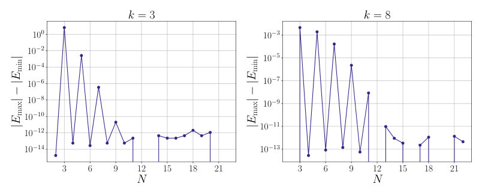
<figcaption class="paper-figure-caption"><b>Fig 1.</b> Figure 1: Difference between the absolute values of the ground state energy and the highest excited-state energy as a function of system size for (a) k = 3 and (b) k = 8. Within numerical precision, the spectrum is symmetric for even N.</figcaption>
</figure>
<figure class="paper-figure-card">
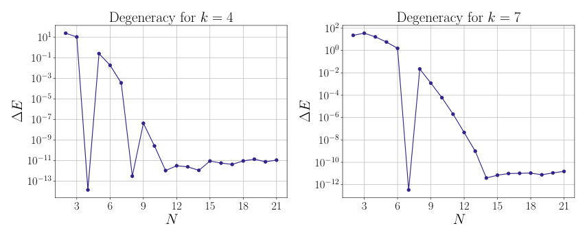
<figcaption class="paper-figure-caption"><b>Fig 2.</b> Figure 2: The degeneracy of the energy levels is approached exponentially fast as N is increased. In commensurate cases, the degeneracy becomes exact.</figcaption>
</figure>
<figure class="paper-figure-card">
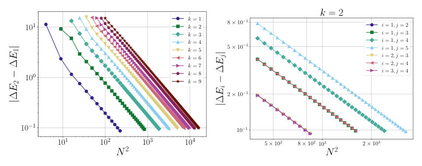
<figcaption class="paper-figure-caption"><b>Fig 3.</b> Figure 3: Convergence of the level spacing to a harmonic oscillator for different values of the CS level k. ∆Ei represents the energy gap between the (i −1)-th and the i-th quasi-degenerate multiplets.</figcaption>
</figure>
<figure class="paper-figure-card">
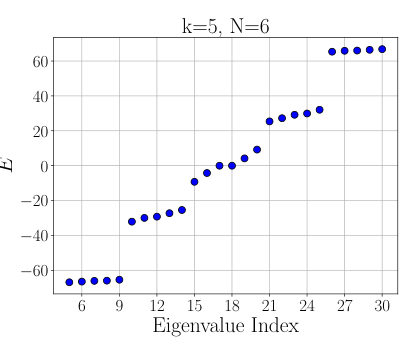
<figcaption class="paper-figure-caption"><b>Fig 4.</b> Figure 4: Mid spectrum for (a) k = 3, N = 4 and (b) k = 5, N = 6.</figcaption>
</figure>
<figure class="paper-figure-card">

<figcaption class="paper-figure-caption"><b>Fig 5.</b> Figure 5: Mid spectrum for (a) k = 3, N = 7 and (b) k = 9, N = 11.</figcaption>
</figure>
</div>

<p><strong>Summary.</strong> This work tackles the difficult problem of simulating Maxwell-Chern-Simons theory by focusing on its topologically rich constant mode sector. By discretizing this sector onto a torus lattice, the authors map the physics onto a Harper-Hofstadter model. The key achievement is identifying precise commensurability conditions under which the finite lattice spectrum accurately reproduces the known topological degeneracy of the continuum theory.</p>
<p><strong>Why it may be interesting.</strong> The connection between topological field theories (like CS theory) and tight-binding models (Hofstadter/Harper) provides a concrete, solvable platform for studying emergent quantum phenomena in strongly interacting systems, relevant to fractionalized excitations in condensed matter.</p>
<details>
<summary>Detailed structure</summary>
<p><strong>Main problem.</strong> The primary goal is developing a non-perturbative Hamiltonian approach for Maxwell-Chern-Simons (MCS) theory in 2+1 dimensions, which is difficult due to the sign problem.</p>
<p><strong>Main result.</strong> The study successfully maps the constant mode sector onto a generalized Harper-Hofstadter model, demonstrating that exact topological degeneracy can be recovered on the lattice under specific commensurability conditions.</p>
<p><strong>Method.</strong> The authors use Hamiltonian quantization techniques, analyzing the flat (zero-mode) sector of the MCS theory and discretizing it onto a torus lattice.</p>
<p><strong>Model / system.</strong> The model is Maxwell-Chern-Simons (MCS) theory on a spatial torus. The analysis focuses on the constant mode sector, which yields an effective Hamiltonian analogous to Landau levels or the Harper equation.</p>
<p><strong>Key observables.</strong> Topological degeneracy ($k$-fold), energy spectrum symmetry ($\pm E$), and quasi-degeneracy of energy multiplets.</p>
<p><strong>Important parameters / regimes.</strong> Chern-Simons level ($k$, related to total flux $\Phi_{	ext{tot}}$) and lattice sizes ($N_x, N_y$). The continuum limit requires the flux per plaquette $\alpha 	o 0$.</p>
<p><strong>Assumptions / limitations.</strong> The analysis relies on isolating the flat sector for benchmarking; convergence to the continuum limit is analyzed by taking $N_x, N_y 	o \infty$ while keeping $k$ fixed.</p>
<p><strong>Figures summary.</strong> Figures illustrate spectral symmetry (pairing of $\pm E$) and show how quasi-degenerate multiplets emerge as lattice size increases, contrasting results for commensurate vs. non-commensurate flux regimes.</p>
<p><strong>Paper structure.</strong> The paper systematically moves from the continuum theory to its lattice discretization, deriving the effective Hamiltonian (Harper equation), analyzing symmetries like chiral symmetry, and finally establishing conditions ($k|N_x, k|N_y$) under which exact topological degeneracies are recovered on the finite lattice.</p>
</details>
<details>
<summary>Abstract</summary>
<p>Maxwell-Chern-Simons (MCS) theory in $2+1$ dimensions provides a paradigmatic example of a topological gauge theory with both dynamical and topological degrees of freedom. Its Euclidean formulation suffers from a sign problem, making Hamiltonian numerical approaches particularly attractive. As a first step toward the non-perturbative Hamiltonian study of MCS theory, we investigate the constant mode sector on a spatial torus. Being analytically solvable in the continuum, it provides an ideal benchmark for understanding how the topological properties of the theory are encoded in a finite-dimensional lattice Hilbert space. We construct a finite-dimensional discretization of the torus of flat connections and show that the resulting lattice problem maps onto a generalized Harper-Hofstadter model with twisted boundary conditions. We identify the commensurability conditions under which the finite lattice exactly reproduces the magnetic translation algebra and the topological degeneracy of the continuum theory. A systematic analysis of gauge field truncation and its convergence toward the continuum limit is then presented.</p>
</details>
<p><sub><a href="#top">↑ back to top</a></sub></p>

<p><a id="paper-2607.00809"></a></p>
<h3 id="vanadium-superconducting-microwave-resonators-on-silicon-wafers"><a href="http://arxiv.org/abs/2607.00809v1">Vanadium superconducting microwave resonators on silicon wafers</a></h3>
<p><strong>Authors:</strong> Y. Fujita, Y. Urade, Y. Hibino, M. Tsujimoto, K. Inomata, G. Fujii, W. Mizubayashi<br>
<strong>Type:</strong> experiment · <strong>Category:</strong> other · <strong>PDF:</strong> <a href="https://arxiv.org/pdf/2607.00809v1">https://arxiv.org/pdf/2607.00809v1</a><br>
<strong>Analysis basis:</strong> full PDF text, analyzed in chunks
<strong>Topic relevance:</strong> 🔥 <code>QC/QI experiment</code> <strong>4/5</strong> · <code>correlated / nonlocal dissipation</code> <strong>2/5</strong> · <code>correlated cavity matter</code> <strong>1/5</strong> · <code>driven-dissipative phase transition</code> <strong>1/5</strong> · <code>quantum optics experiment</code> <strong>1/5</strong></p>
<div class="figure-strip-hint">↔ Scroll figures horizontally</div>
<div class="paper-figures-scroll">
<figure class="paper-figure-card">
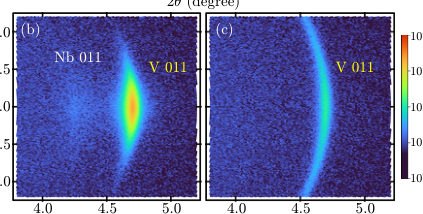
<figcaption class="paper-figure-caption"><b>Fig 1.</b> FIG. 1. (a) ω-2θ XRD profiles for Si/Nb/V and Si/V samples obtained by setting the scattering</figcaption>
</figure>
<figure class="paper-figure-card">

<figcaption class="paper-figure-caption"><b>Fig 2.</b> Figure 1(a) shows the out-of-plane XRD profiles of ω-2θ scans from the ⟨001⟩directions of</figcaption>
</figure>
<figure class="paper-figure-card">

<figcaption class="paper-figure-caption"><b>Fig 3.</b> Fig. 1(a). Note that the small V 001 peak was not always reproduced even when the film</figcaption>
</figure>
<figure class="paper-figure-card">

<figcaption class="paper-figure-caption"><b>Fig 4.</b> FIG. 2. AFM topographic images of the surfaces of (a) Si/Nb/V, (b) Si/V, (c) Si/Nb/V/Ta, and</figcaption>
</figure>
<figure class="paper-figure-card">

<figcaption class="paper-figure-caption"><b>Fig 5.</b> FIG. 4. (a) Optical micrograph of a CPW resonator chip with a Si/Nb/V/Ta structure. (b) Cross-</figcaption>
</figure>
</div>

<p><strong>Summary.</strong> This experimental study investigates microwave losses in Vanadium superconducting resonators fabricated on silicon wafers using various buffer and capping layers (Nb, Ta). By combining structural analysis with $Q_{	ext{int}}$ measurements, the authors determined that non-TLS losses dominate energy dissipation. They found that while buffering improves crystal structure, secondary phases like V oxides or hydrides at grain boundaries are the primary source of excess loss.</p>
<p><strong>Why it may be interesting.</strong> This work is highly relevant as it directly addresses energy dissipation in superconducting circuits, a critical bottleneck for quantum computing hardware. The detailed material science investigation into oxide/hydride formation provides physical insights applicable to understanding decoherence sources in solid-state qubits.</p>
<details>
<summary>Detailed structure</summary>
<p><strong>Main problem.</strong> The study aims to understand how material structural properties correlate with microwave energy losses in superconducting Vanadium (V) films, which is crucial for developing low-loss quantum circuits.</p>
<p><strong>Main result.</strong> Losses are dominated by non-TLS sources ($\delta_{other}$), and while better lattice uniformity (via Nb buffer) was achieved, it counterintuitively increased these non-TLS losses compared to direct growth on Si.</p>
<p><strong>Method.</strong> The research combines structural characterization (XRD, AFM) with electrical measurements using microwave resonators ($Q_{	ext{int}}$ vs. $\langle n_{	ext{ph}} 
angle$) and surface analysis (XPS).</p>
<p><strong>Model / system.</strong> The physical system is a superconducting resonator built from V films on Si wafers, often incorporating Nb buffer layers or Ta capping layers ($    ext{Si}/    ext{Nb}/    ext{V}/ ext{Ta}$). Loss mechanisms are modeled by fitting $Q_{	ext{int}}$ dependence on the average photon number $\langle n_{	ext{ph}} 
angle$.</p>
<p><strong>Key observables.</strong> Internal quality factor ($Q_{	ext{int}}$) vs. $\langle n_{	ext{ph}} 
angle$, non-TLS loss ($\delta_{other}$), lattice coherence (XRD FWHM), and surface oxidation states (XPS).</p>
<p><strong>Important parameters / regimes.</strong> Operating temperature (10 mK), photon number range ($10^0$ to $10^6$), and the presence/absence of Nb buffer or Ta capping layers.</p>
<p><strong>Assumptions / limitations.</strong> The primary assumption is that microwave loss can be decomposed into TLS-related and non-TLS components, allowing for material comparison based on these fitted parameters.</p>
<p><strong>Figures summary.</strong> Figures show XRD profiles confirming lattice coherence improvement with Nb, AFM images comparing surface roughness across structures, and plots detailing $Q_{	ext{int}}$ vs. $\langle n_{	ext{ph}} 
angle$ to extract loss components.</p>
<p><strong>Paper structure.</strong> The paper follows a structure of problem definition (loss mitigation), material comparison ($  ext{Si}/    ext{V}$ vs. buffered/capped stacks), characterization using multiple techniques (structural, electrical, chemical), and finally, quantitative analysis linking structural defects (oxides, grain boundaries) to increased non-TLS loss.</p>
</details>
<details>
<summary>Abstract</summary>
<p>Understanding the correlation between material properties and microwave losses in superconducting films is a crucial subject for developing low-loss materials for quantum circuits. We focus on vanadium (V) as a novel material for superconducting quantum devices and discuss loss in V films in relation to their structural properties. Using a sputtering method, we grow four V-film structures on (001)-oriented Si wafers, employing Nb and Ta as the buffer and capping layer materials, respectively: Nb/V/Ta, Nb/V, V/Ta, and V. X-ray diffraction and atomic force microscopy reveal that the V films grown on the Nb buffer layers have higher uniformity of lattice orientation and smaller grain size than that directly grown on the Si wafer. Coplanar waveguide resonators are fabricated from the four V-film structures, and averaged photon number ($\langle n_{\rm ph} \rangle$) dependences of internal quality factor ($Q_{\rm int}$) are obtained by performing microwave measurements. By analyzing the obtained $Q_{\rm int}$ vs $\langle n_{\rm ph} \rangle$, it is found that loss at the V surface is dominated by $\langle n_{\rm ph} \rangle$-independent non-two-level-system (non-TLS) losses, which can be mitigated by introducing the Ta capping layer. Furthermore, the V films on the Nb buffer layers exhibit lower $Q_{\rm int}$ in the $\langle n_{\rm ph} \rangle$ range from 10$^{0}$ to 10$^{6}$ and higher non-TLS loss than that directly grown on Si wafers, even though the former has higher lattice-orientation uniformity than the latter. Origins of these trends might be relevant to V oxides, of which presence at surfaces and grain boundaries in bulk regions in the V resonators is suggested by energy dispersive X-ray spectroscopy and X-ray photoelectron spectroscopy, and/or V hydrides.</p>
</details>
<p><sub><a href="#top">↑ back to top</a></sub></p>

<p><a id="paper-2607.00229"></a></p>
<h3 id="production-of-magic-states-via-math326math-bosons-and-dark-photons"><a href="http://arxiv.org/abs/2607.00229v1">Production of Magic States via $Z$ Bosons and Dark Photons</a></h3>
<p><strong>Authors:</strong> Carlos Alvarado, Alfredo Aranda, César Bonilla, Yahir Lua, Ethan Rodríguez-Martínez<br>
<strong>Type:</strong> theory · <strong>Category:</strong> other · <strong>PDF:</strong> <a href="https://arxiv.org/pdf/2607.00229v1">https://arxiv.org/pdf/2607.00229v1</a><br>
<strong>Analysis basis:</strong> full PDF text, analyzed in chunks
<strong>Topic relevance:</strong> 🔥 <code>entanglement &amp; information structure</code> <strong>4/5</strong> · <code>Keldysh / 2PI / non-Gaussian methods</code> <strong>1/5</strong> · <code>correlated / nonlocal dissipation</code> <strong>1/5</strong> · <code>driven-dissipative phase transition</code> <strong>1/5</strong> · <code>methods for driven-dissipative</code> <strong>1/5</strong></p>
<div class="figure-strip-hint">↔ Scroll figures horizontally</div>
<div class="paper-figures-scroll">
<figure class="paper-figure-card">

<figcaption class="paper-figure-caption"><b>Fig 1.</b> FIG. 2. Angular dependence of the magic distributions obtained from Mγ + MZ under Møller</figcaption>
</figure>
<figure class="paper-figure-card">
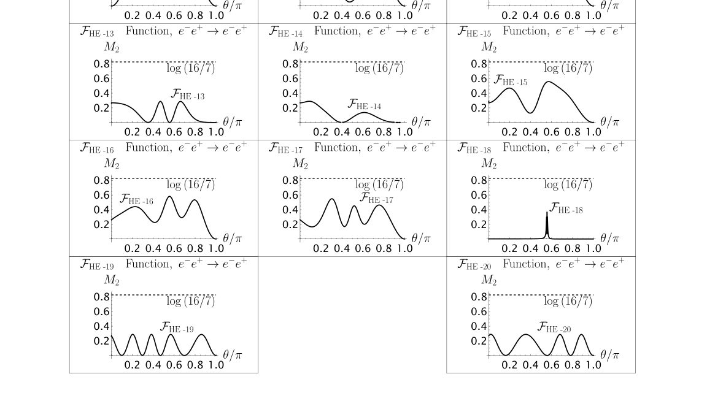
<figcaption class="paper-figure-caption"><b>Fig 2.</b> FIG. 3. Angular dependence of the magic distributions obtained from Mγ + MZ under Bhabha</figcaption>
</figure>
<figure class="paper-figure-card">
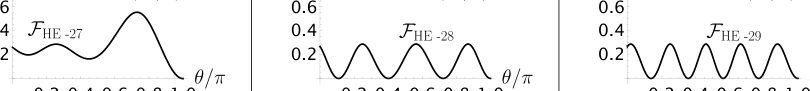
<figcaption class="paper-figure-caption"><b>Fig 3.</b> FIG. 4. Angular dependence of the magic distributions obtained from Mγ + MZ under elastic</figcaption>
</figure>
<figure class="paper-figure-card">

<figcaption class="paper-figure-caption"><b>Fig 4.</b> FIG. 6. Angular dependence of the magic distributions obtained from Mγ + MZ under pair</figcaption>
</figure>
<figure class="paper-figure-card">

<figcaption class="paper-figure-caption"><b>Fig 5.</b> FIG. 7. Angular dependence of the magic distributions obtained from Mγ + MZ under Møller</figcaption>
</figure>
</div>

<p><strong>Summary.</strong> This paper analyzes 'magic states' by calculating a specific measure of non-classicality across various particle scattering processes. It compares results from the Standard Model electroweak sector (including Z bosons) against extensions involving dark photons and fermions. The key finding is that these new interactions significantly reorganize or generate novel magic distributions, providing sensitive probes for physics beyond the Standard Model.</p>
<p><strong>Why it may be interesting.</strong> While focused on particle physics phenomenology, the mathematical framework—quantifying non-classicality via Rényi entropy and stabilizer formalism—is directly applicable to characterizing entanglement structures in open quantum systems or complex many-body states.</p>
<details>
<summary>Detailed structure</summary>
<p><strong>Main problem.</strong> The study investigates how including contributions from Z-boson exchange (electroweak) or dark photons modifies the production of 'magic states' in various particle scattering processes.</p>
<p><strong>Main result.</strong> New magic distribution functions are generated, particularly in high-energy and Z-resonance regimes for EW effects, and in the low-energy limit when considering dark photon mediators. Certain stabilizer classes remain robust across different energy scales.</p>
<p><strong>Method.</strong> The analysis uses the stabilizer formalism to quantify 'magic' via the second stabilizer Rényi entropy ($M_2$) applied to $2 	o 2$ tree-level scattering amplitudes in both Standard Model and extended dark sectors.</p>
<p><strong>Model / system.</strong> The models include the electroweak sector of the SM (incorporating Z bosons) and extensions featuring a broken U(1) symmetry with a charged dark fermion ($\chi$). Processes analyzed are Møller, Bhabha, and pair annihilation scattering.</p>
<p><strong>Key observables.</strong> Magic distribution functions ($F_{n,i}$), second stabilizer Rényi entropy ($M_2$), and the angular dependence of these distributions.</p>
<p><strong>Important parameters / regimes.</strong> Energy regimes (low-energy, high-energy, Z-resonance limit), mass ratios ($m_f/m_\chi$, $m_{A'}/m_\chi$), and weak mixing angle ($\sin^2	heta_W$).</p>
<p><strong>Assumptions / limitations.</strong> The analysis often relies on power expansions in kinematic variables or specific approximations for the propagators in different energy limits.</p>
<p><strong>Figures summary.</strong> Figures illustrate the angular dependence of magic distributions for various processes (e.g., Møller, Bhabha) across different regimes (high-energy vs. Z-resonance), showing structural changes and new peaks.</p>
<p><strong>Paper structure.</strong> The paper systematically analyzes results in multiple settings: first the pure EW sector, then the dark U(1) extension, comparing low-energy limits to high-energy/resonant limits for various scattering channels.</p>
</details>
<details>
<summary>Abstract</summary>
<p>The production of magic states is studied in two settings. The first is the electroweak (EW) sector of the Standard Model (SM). The second is an extension featuring a new broken $U(1)$ gauge symmetry and a Dirac fermion charged under it. This setup resembles a dark $U(1)$ scenario, with the additional fermion playing the role of a dark matter candidate that annihilates into SM particles through its coupling to the new gauge boson. In the EW sector, the low-energy regime reproduces earlier magic production results obtained for Quantum Electrodynamics, whereas the high-energy and $Z$-resonance regimes generate new magic distribution functions and non-trivially reorganize the stabilizer state classes, with Bhabha scattering exhibiting the strongest sensitivity to electroweak effects. Also, a subset of fixed stabilizer states is identified, for which the magic distributions remain unchanged across the different energy regimes. In the dark sector, the main effect of the new massive mediator is the appearance of new magic distributions functions for Moller-like, Bhabha-like, and inverse pair-annihilation processes in the low-energy limit. These reach the maximal magic value at the SM-to-dark fermion mass ratios $m_f/m_χ\to 0$ and $m_f/m_χ\to 1.83929$.</p>
</details>
<p><sub><a href="#top">↑ back to top</a></sub></p>

<p><a id="paper-2607.01227"></a></p>
<h3 id="polynomial-equivalence-of-the-global-transverse-field-ising-model-and-the-gate-model-of-quantum-computation"><a href="http://arxiv.org/abs/2607.01227v1">Polynomial equivalence of the global transverse-field Ising model and the gate model of quantum computation</a></h3>
<p><strong>Authors:</strong> Matthias Werner<br>
<strong>Type:</strong> theory · <strong>Category:</strong> quantum information and computing · <strong>PDF:</strong> <a href="https://arxiv.org/pdf/2607.01227v1">https://arxiv.org/pdf/2607.01227v1</a><br>
<strong>Analysis basis:</strong> full PDF text, analyzed in chunks
<strong>Topic relevance:</strong> 🔥 <code>analog quantum simulation</code> <strong>4/5</strong> · <code>entanglement &amp; information structure</code> <strong>1/5</strong> · <code>exotic spin models in light-matter</code> <strong>1/5</strong> · <code>non-equilibrium dynamics</code> <strong>1/5</strong></p>
<div class="figure-strip-hint">↔ Scroll figures horizontally</div>
<div class="paper-figures-scroll">
<figure class="paper-figure-card">

<figcaption class="paper-figure-caption"><b>Fig 1.</b> Figure 1. (a): Basic mechanism of the Cesa-Pichler method [9] to move quantum information along the qubit wires. UA and UB represent X-gates on the respective qubit species A (blue) and B (red), conditional on being blockaded by its neighboring qubits; (b): arrangement for the application of entangling gates, where a 2π-pulse is applied to a qubit of species C (purple); (c): qubit arrangement for the application of single-qubit gates in the Cesa-Pichler method, where the gates are executed when the logical qubit is located on a qubit of species D (green); (d): schedule Γt consisting of a concatenation of Γ-pulses over a time τ (red shaded), in between the Γ-pulses, the system evolves under...</figcaption>
</figure>
<figure class="paper-figure-card">
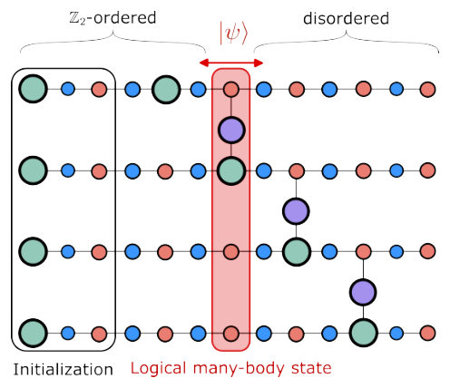
<figcaption class="paper-figure-caption"><b>Fig 2.</b> Figure 2. Graph G of the universal arrangement proposed by Cesa &amp; Pichler for a system of four logical qubits. The first three qubits (black box) on the left-hand side of each chain serve to initialize the standard configuration, while ev- ery chain has an impurity for single-qubit gates and a con- nection via an impurity to its neighbors for logical two-qubit gates. Then, depending on the order of pulses in the propa- gation cycle, the logical many-body state (red box) can move left and right, so that logical operations on any qubit and be- tween neighboring pairs can be executed. This topology cor- responds to a chain of five logical qubits with nearest-neighbor couplings. Interactions...</figcaption>
</figure>
<figure class="paper-figure-card">

<figcaption class="paper-figure-caption"><b>Fig 3.</b> Figure 3. Illustration of the assumptions of semi-global con- trol as per the Cesa-Pichler method (top) and the global drive due to the transverse field generating Γ-pulses on all qubits simultaneously (bottom).</figcaption>
</figure>
<figure class="paper-figure-card">

<figcaption class="paper-figure-caption"><b>Fig 4.</b> Figure 4. Illustration of the CP-method with a global drive. The black box in the main figure and the inset correspond to each other. In the CP-method it is assumed that dis- tinct groups of atoms can be driven independently. Here, we only have the ability to apply a transverse field to all qubits at the same time. Therefore, adjacent qubits blockade each other due to the global drive, resulting in errors due to these unwanted blockade interactions. We can recover individual control of non-adjacent qubit groups using specifically cho- sen local Z-fields and exploiting constructive and destructive interference. By appropriately chosen phase-gates between the Γ-pulses, the non-driven qubits...</figcaption>
</figure>
<figure class="paper-figure-card">
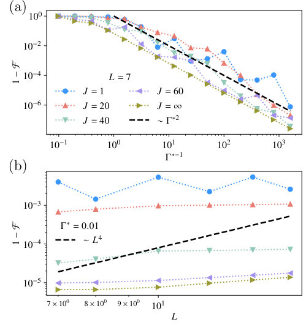
<figcaption class="paper-figure-caption"><b>Fig 5.</b> Figure 5. Infidelity 1 −F of a single propagation cycle as shown in Figure 1(a) compiled in global Γ-pulses as a func- tion of the inverse maximal transverse field Γ∗−1 (a) and as a function of the system size (b). The data in (a) is generated with a fixed L = 7, while in (b) we fix the maximal trans- verse field at Γ∗= 0.01. The colors and markers indicate the same J in both figures. J = ∞corresponds to a simulation without blockade Hamiltonian HJ, but instead projected onto the computational subspace P. We can see a clear quadratic decay in (a) consistent with the theoretical prediction, while in (b) the observed scaling is much slower than the predicted worst case. The dashed black line...</figcaption>
</figure>
</div>

<p><strong>Summary.</strong> The paper proves that the global transverse-field Ising model is computationally equivalent to the gate model of quantum computing. It achieves this by constructing sequences of time-dependent driving pulses ($\Gamma_t$) that simulate arbitrary quantum circuits with polynomial overheads in resources. This result is significant because it validates TFIM platforms for universal computation while also providing a theoretical lower bound on classical simulation complexity.</p>
<p><strong>Why it may be interesting.</strong> This work directly connects condensed matter physics models (Ising model dynamics) to the fundamental limits of quantum computation, providing a theoretical pathway for realizing universal quantum computation on platforms naturally described by spin Hamiltonians.</p>
<details>
<summary>Detailed structure</summary>
<p><strong>Main problem.</strong> The central question addressed is whether the global transverse-field Ising model (TFIM) with a time-dependent field is computationally equivalent to the universal gate model of quantum computation.</p>
<p><strong>Main result.</strong> The authors prove that, under specific conditions and polynomial overheads in resources, the global TFIM can simulate arbitrary quantum circuits, establishing its computational universality.</p>
<p><strong>Method.</strong> They construct a simulation by mapping quantum gates onto controlled time evolution sequences using engineered non-monotonic transverse fields ($\Gamma_t$) and exploiting blockade interactions within the Ising model framework.</p>
<p><strong>Model / system.</strong> The system is the global TFIM, governed by $H_t = \Gamma_t H_X + H_Z$. The simulation utilizes a graph structure where logical qubits are encoded on physical wires, allowing for controlled single-qubit and entangling gates via impurities (C and D types).</p>
<p><strong>Key observables.</strong> Simulation error ($\delta'_{	ext{total}}$), required resource scaling (time $T$, coupling $|J|$), and the fidelity of implemented gates.</p>
<p><strong>Important parameters / regimes.</strong> The simulation relies on controlling parameters like $\Gamma^*$ (global drive strength), $\epsilon_{	ext{phase}}$ (phase control error), and the interaction strength $|J|$, all scaled polynomially with circuit depth ($p$) and qubit number ($n$).</p>
<p><strong>Assumptions / limitations.</strong> Key assumptions include assuming BQP $
eq$ BPP for the no-go theorem, and relying on approximations like weak driving ($\Gamma^* \ll 1$) and taking limits in the analysis (e.g., $|J| 	o \infty$ initially).</p>
<p><strong>Figures summary.</strong> Figures illustrate the basic mechanism of information propagation along wires using blockade interactions, the arrangement of different qubit types (A, B, C, D), and comparisons between global drive methods and site-resolved control.</p>
<p><strong>Paper structure.</strong> The paper builds by first establishing the physical realization of universal gates within the TFIM framework (using impurities/wires) and then rigorously proving computational equivalence by deriving resource scaling laws for simulating arbitrary circuits using time-dependent $\Gamma$-pulses, culminating in an overall error bound calculation.</p>
</details>
<details>
<summary>Abstract</summary>
<p>The transverse-field Ising model has attracted a lot of attention in recent years, especially in the quantum simulation and quantum computation literature. This interest is driven by many platforms for analog quantum computation, which implement the transverse-field Ising model for solving optimization problems, such as quantum annealing. However, it has remained an open question whether the Ising model with a global transverse field is equivalent to the gate model of quantum computation. Here we answer this question affirmatively for the case of a non-monotonic time-dependent transverse field. Building on a recent result by Cesa and Pichler on global control of Rydberg atoms, we provide a construction that allows simulating arbitrary quantum circuits using the Ising model with global transverse field with polynomial overhead in time, qubit number, and energy scale. Although the polynomial overheads we establish here are large relative to what is feasible on real-world quantum hardware, our result motivates the development of more sophisticated methods for simulating quantum circuits using the Ising model with a global transverse field. Additionally, under the assumption that quantum computing is strictly more powerful than classical computing, our result serves as a no-go theorem for efficient classical simulation of the transverse-field Ising model with a time-dependent global transverse field. Therefore, our finding is relevant for multiple communities, from analog quantum simulation and quantum optimization on various platforms to complexity and control theory.</p>
</details>
<p><sub><a href="#top">↑ back to top</a></sub></p>

<p><a id="paper-2607.00198"></a></p>
<h3 id="wavefunctions-localization-and-the-wigners-friend-paradox-in-a-framework-of-discrete-space-hypothesis"><a href="http://arxiv.org/abs/2607.00198v1">Wavefunctions localization, and the Wigner's Friend Paradox in a Framework of Discrete-Space Hypothesis</a></h3>
<p><strong>Authors:</strong> W. A. Zúñiga-Galindo<br>
<strong>Type:</strong> theory · <strong>Category:</strong> other · <strong>PDF:</strong> <a href="https://arxiv.org/pdf/2607.00198v1">https://arxiv.org/pdf/2607.00198v1</a><br>
<strong>Analysis basis:</strong> full PDF text, analyzed in chunks
<strong>Topic relevance:</strong> 🔥 <code>measurement-induced transitions</code> <strong>4/5</strong> · <code>quantum measurements</code> <strong>3/5</strong></p>
<div class="figure-strip-hint">↔ Scroll figures horizontally</div>
<div class="paper-figures-scroll">
<figure class="paper-figure-card">
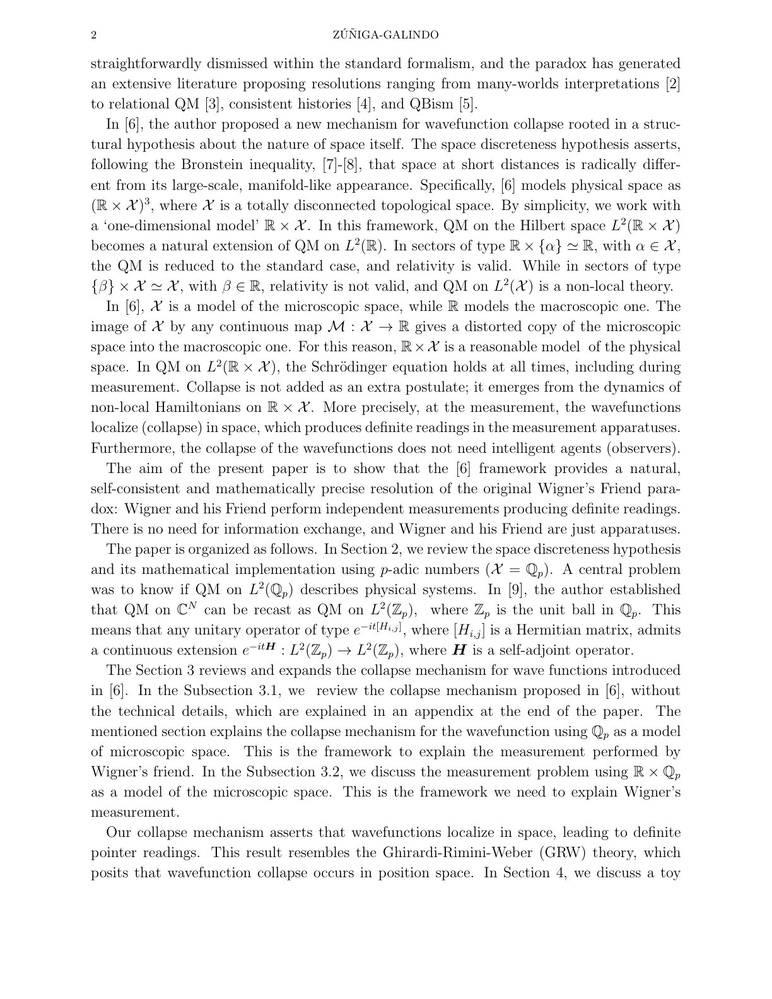
<figcaption class="paper-figure-caption"><b>Fig 1.</b> Low-resolution page preview, page 2</figcaption>
</figure>
<figure class="paper-figure-card">

<figcaption class="paper-figure-caption"><b>Fig 2.</b> Low-resolution page preview, page 3</figcaption>
</figure>
<figure class="paper-figure-card">
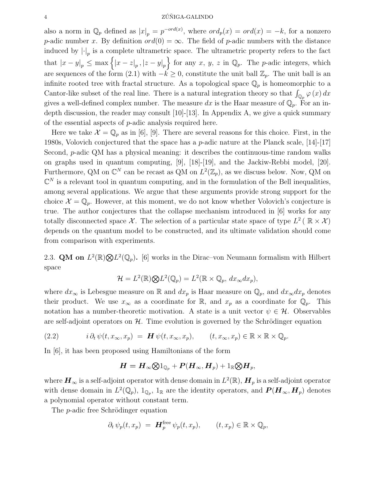
<figcaption class="paper-figure-caption"><b>Fig 3.</b> Low-resolution page preview, page 4</figcaption>
</figure>
<figure class="paper-figure-card">

<figcaption class="paper-figure-caption"><b>Fig 4.</b> Low-resolution page preview, page 5</figcaption>
</figure>
<figure class="paper-figure-card">

<figcaption class="paper-figure-caption"><b>Fig 5.</b> Low-resolution page preview, page 6</figcaption>
</figure>
</div>

<p><strong>Summary.</strong> This paper resolves the Wigner's Friend paradox by reformulating quantum mechanics on a hybrid space combining continuous real space and discrete p-adic space. It argues that wavefunction collapse is not an external postulate but a dynamical outcome of non-local Hamiltonians acting within this structure. This approach successfully explains definite measurement outcomes for all observers without invoking consciousness or observer intervention.</p>
<p><strong>Why it may be interesting.</strong> It provides a mathematically rigorous, non-observer-dependent resolution to a foundational problem in quantum mechanics by embedding it within advanced number theory ($\mathbb{Q}_p$).</p>
<details>
<summary>Detailed structure</summary>
<p><strong>Main problem.</strong> The paper aims to resolve the Wigner's Friend paradox by developing a quantum mechanical framework that incorporates discrete microscopic space.</p>
<p><strong>Main result.</strong> Wavefunction collapse is shown to be a dynamical consequence of the Schrödinger equation on a hybrid $\mathbb{R} 	imes \mathbb{Q}_p$ space, eliminating observer-dependent assumptions and resolving the conflict between different observers' descriptions of reality.</p>
<p><strong>Method.</strong> The authors model quantum mechanics on $L^2(\mathbb{R} 	imes \mathbb{Q}_p)$, using non-local Hamiltonians derived from p-adic analysis to explain wavefunction localization during measurement interactions.</p>
<p><strong>Model / system.</strong> The system is described by QM on the hybrid space $\mathbb{R} 	imes \mathbb{Q}_p$, where $\mathbb{Q}_p$ models discrete Planck-scale space. The dynamics are governed by a Schrödinger equation whose non-locality forces wavefunction collapse onto compact supports during measurement.</p>
<p><strong>Key observables.</strong> Wavefunction localization onto compact supports, definite pointer readings for both Wigner and his Friend.</p>
<p><strong>Important parameters / regimes.</strong> The p-adic number field $\mathbb{Q}_p$, the Planck–Bronstein scale (setting the discrete nature of space).</p>
<p><strong>Assumptions / limitations.</strong> The core assumption is that QM holds on $L^2(\mathbb{R} 	imes \mathbb{Q}_p)$, and observers are treated as classical apparatuses, not rational agents.</p>
<p><strong>Paper structure.</strong> The paper builds the framework by defining dynamics on $\mathbb{R} 	imes \mathbb{Q}_p$, applying this to toy models (particle in a box), and then using the resulting collapse mechanism to resolve the paradox for both temporal orderings of Wigner's Friend scenario.</p>
</details>
<details>
<summary>Abstract</summary>
<p>We present a resolution of the Wigner's Friend paradox within a framework of quantum mechanics (QM) on the hybrid space RxQ_{p}, where Q_{p} denotes the field of p-adic numbers, regarded as a model of discrete microscopic space at the Planck-Bronstein scale. In this framework, wavefunction collapse is not an independent postulate but a dynamical consequence of the Schrödinger equation with non-local Hamiltonians: wavefunctions localize onto compact supports during measurement interactions, producing definite pointer readings without the intervention of observers or the exchange of information between subsystems. We model both Wigner and his Friend as classical apparatuses and show that each produces a definite reading through independent applications of the collapse mechanism, thereby eliminating the conflict between their descriptions of reality. The framework is consistent with the principal no-go theorems in finite- and infinite-dimensional Hilbert spaces associated with extended Wigner's Friend scenarios -- including those of Frauchiger-Renner, Brukner, Bong et al., and Guérin et al. -- since it requires no agents capable of recording or reasoning about outcomes, thereby vacating the observer-dependent assumptions that drive those theorems. We illustrate the collapse mechanism explicitly through a toy model of a particle in a box, comparing the standard description with the new one. The non-locality intrinsic to QM on L2(RxQ_{p}) permits realism at the cost of locality, and the Absoluteness of Observed Events holds in our framework without requiring observer independence.</p>
</details>
<p><sub><a href="#top">↑ back to top</a></sub></p>

<p><a id="paper-2607.01038"></a></p>
<h3 id="exact-interlayer-triplet-pairing-eigenstates-in-the-extended-hubbard-model"><a href="http://arxiv.org/abs/2607.01038v1">Exact interlayer triplet-pairing eigenstates in the extended Hubbard model</a></h3>
<p><strong>Authors:</strong> F. X. Liu, Z. Song<br>
<strong>Type:</strong> theory · <strong>Category:</strong> strongly correlated electrons · <strong>PDF:</strong> <a href="https://arxiv.org/pdf/2607.01038v1">https://arxiv.org/pdf/2607.01038v1</a><br>
<strong>Analysis basis:</strong> full PDF text, analyzed in chunks
<strong>Topic relevance:</strong> 🔥 <code>analog quantum simulation</code> <strong>4/5</strong> · <code>entanglement &amp; information structure</code> <strong>1/5</strong> · <code>non-equilibrium dynamics</code> <strong>1/5</strong></p>
<div class="figure-strip-hint">↔ Scroll figures horizontally</div>
<div class="paper-figures-scroll">
<figure class="paper-figure-card">
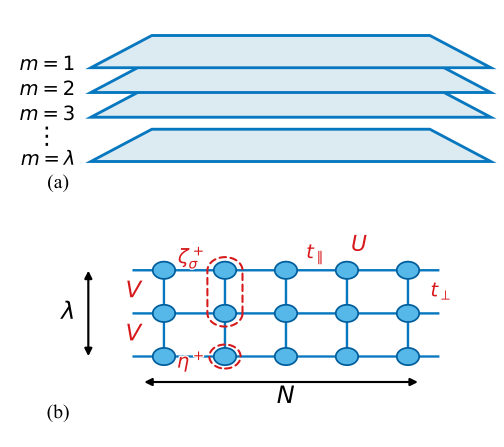
<figcaption class="paper-figure-caption"><b>Fig 1.</b> FIG. 1. (a) Schematic illustration of a multi-layered lattice system. The index m ∈[1, λ] labels the layers. All layers are identical bipartite lattices. The interlayer hopping and interaction are nearest-neighbor. (b) The simplest example of the system is an N × λ square lattice, where the layers reduce to chains. The parameters of the extended Hubbard model are indicated in the panel. The key feature is that the nearest-neighbor interactions exist only between layers. The triplet pair presented in this work is formed across two nearest-neighbor sites on two layers (labeled by a red dashed line surrounding the two sites), while the singlet pair is an on-site pair (labeled by a red dashed...</figcaption>
</figure>
<figure class="paper-figure-card">
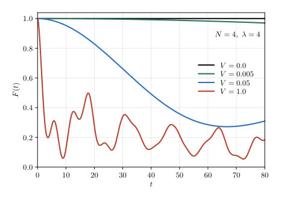
<figcaption class="paper-figure-caption"><b>Fig 2.</b> FIG. 2. Plots of the fidelity defined in Eq. (22) for the initial</figcaption>
</figure>
<figure class="paper-figure-card">

<figcaption class="paper-figure-caption"><b>Fig 3.</b> FIG. 3. Plots of the two correlation functions CS(r, t) and CT(r, t) defined in Eqs. (23) and (24) for three initial pair states</figcaption>
</figure>
</div>

<p><strong>Summary.</strong> The authors analyze the multi-layer extended Hubbard model to find exact eigenstates corresponding to interlayer triplet superconductivity. They show that these states are mathematically stable and physically realized only in bilayer and trilayer systems due to specific algebraic constraints (RSGA). This work advances understanding of pairing mechanisms by demonstrating how triplet pairs can dominate over singlet pairs when interlayer interactions are present.</p>
<p><strong>Why it may be interesting.</strong> This work provides an analytical understanding of exotic superconducting phases (triplet pairing) in layered correlated materials by mapping out precise conditions ($\lambda=2, 3$) under which exact solutions exist, linking symmetry constraints directly to physical realizability.</p>
<details>
<summary>Detailed structure</summary>
<p><strong>Main problem.</strong> The work investigates the existence and properties of exact interlayer triplet-pairing eigenstates within the multi-layer extended Hubbard model, generalizing prior studies on $\eta$-pairing states.</p>
<p><strong>Main result.</strong> Exact triplet-pair eigenstates are found to exist only in bilayer ($\lambda=2$) and trilayer ($\lambda=3$) systems when interlayer interactions ($V$) are present. These states demonstrate off-diagonal long-range order (ODLRO) but cannot coexist with singlet pairs if $V 
eq 0$.</p>
<p><strong>Method.</strong> The analysis relies on constructing specialized triplet-pairing operators ($\zeta^\pm_\sigma$) and applying symmetry-generating algebra (SGA) and restricted spectrum-generating algebra (RSGA) to find exact solutions.</p>
<p><strong>Model / system.</strong> The system is the multi-layer extended Hubbard model defined by a Hamiltonian including intralayer hopping ($t$), interlayer hopping ($t_\perp$), on-site interaction ($U$), and interlayer interaction ($V$).</p>
<p><strong>Key observables.</strong> Off-diagonal long-range order (ODLRO), stability of eigenstates measured via fidelity $F(t)$, and correlation functions for singlet ($C_S$) and triplet ($C_T$) pairs.</p>
<p><strong>Important parameters / regimes.</strong> The number of layers ($\lambda$), the interaction strengths ($U, V$), and the hopping parameters ($t, t_\perp$).</p>
<p><strong>Assumptions / limitations.</strong> The existence of exact eigenstates is restricted by the requirement that the Hamiltonian must satisfy the conditions for a Restricted Spectrum-Generating Algebra (RSGA), limiting applicability to $\lambda=2$ and $\lambda=3$.</p>
<p><strong>Figures summary.</strong> Figure 1 illustrates the multi-layered lattice structure and hopping terms; Figure 2 plots the fidelity $F(t)$ to demonstrate state stability under time evolution for different layer numbers ($\lambda$).</p>
<p><strong>Paper structure.</strong> The paper introduces the model and pairing operators, derives conditions based on symmetry algebra (RSGA), establishes the existence of exact eigenstates for $\lambda=2, 3$, and uses quench dynamics simulations to confirm their stability against interlayer interactions.</p>
</details>
<details>
<summary>Abstract</summary>
<p>$η$-pairing symmetry generalizes the pairing mechanisms in superconductivity but is broken in the presence of interlayer interactions. In this work, we extend this approach to triplet pairs. We propose interlayer triplet-pairing operators for the multi-layer extended Hubbard model. We find that a set of exact condensate-pair eigenstates can be constructed, which exhibit off-diagonal long-range order. In contrast to the $η$-pairing mechanism, this originates from restricted spectrum generating algebra and is only available for bilayer and trilayer systems in the presence of interlayer Hubbard interactions. Nevertheless, the system also retains the original on-site $η$-pairing symmetry in the absence of interlayer interactions. Consequently, both singlet and triplet pairs coexist in the eigenstates of the multi-layer Hubbard model. We employ quench dynamics to demonstrate the results through numerical simulations. Our findings open avenues for the study of exact condensate-pair states in strongly correlated systems.</p>
</details>
<p><sub><a href="#top">↑ back to top</a></sub></p>

<p><a id="paper-2607.00660"></a></p>
<h3 id="overcoming-the-speed-fidelity-trade-off-in-fast-cz-gates-via-cyclic-control"><a href="http://arxiv.org/abs/2607.00660v1">Overcoming the Speed-Fidelity Trade-off in Fast CZ Gates via Cyclic Control</a></h3>
<p><strong>Authors:</strong> Ze-An Zhao, Hai-Feng Zhang, Tian-Le Wang, Xiao-Yan Yang, Peng Wang, Ren-Ze Zhao, Sheng Zhang, Zhi-Fei Li, Yuan Wu, Zi-Hao Fu, Sheng-Ri Liu, Peng Duan, Guo-Ping Guo<br>
<strong>Type:</strong> experiment · <strong>Category:</strong> quantum information and computing · <strong>PDF:</strong> <a href="https://arxiv.org/pdf/2607.00660v1">https://arxiv.org/pdf/2607.00660v1</a><br>
<strong>Analysis basis:</strong> full PDF text, analyzed in chunks
<strong>Topic relevance:</strong> 🔥 <code>QC/QI experiment</code> <strong>4/5</strong> · <code>methods for driven-dissipative</code> <strong>1/5</strong> · <code>non-equilibrium dynamics</code> <strong>1/5</strong></p>
<div class="figure-strip-hint">↔ Scroll figures horizontally</div>
<div class="paper-figures-scroll">
<figure class="paper-figure-card">
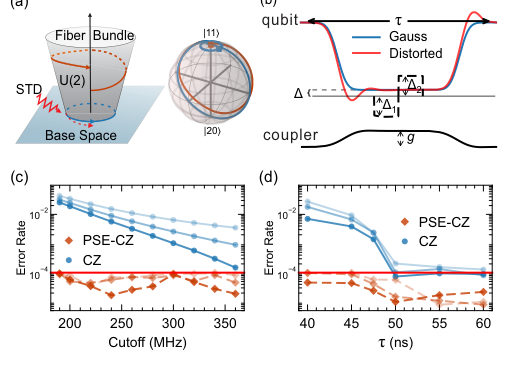
<figcaption class="paper-figure-caption"><b>Fig 1.</b> FIG. 1. Geometric mechanism and simulation of the PSE-CZ gate. (a) Left: Cyclic evolution in the base space induces a non- Abelian geometric phase in the U(2) bundle, which is susceptible to hardware imperfections such as STD. Right: Bloch sphere tra- jectories in the |11⟩−|20⟩subspace for a non-cyclic gate resulting from STD (blue) and an ideal cyclic gate (orange); squares denote evolution endpoints. (b) CZ gate pulse sequence (duration τ) uti- lizing flattop Gaussian waveforms with distortions simulated via a Butterworth low-pass filter. The PSE-CZ scheme employs indepen- dent amplitudes ∆1 and ∆2 for the two segments split at the midpoint, with experimental values typically in the range...</figcaption>
</figure>
<figure class="paper-figure-card">

<figcaption class="paper-figure-caption"><b>Fig 2.</b> FIG. 3. Leakage and CPhase landscapes in the expanded param- eter space. (a),(b) Leakage into the |20⟩state and (c),(d) CPhase plotted as a function of ∆1 and ∆2. Panels (a) and (c) display ex- perimental results, while (b) and (d) show simulations under STD. The red star and blue dot in (a) indicate the operating points for the PSE-CZ and traditional CZ gates, respectively. In (b)-(d), PC con- tour lines are superimposed for reference.</figcaption>
</figure>
<figure class="paper-figure-card">
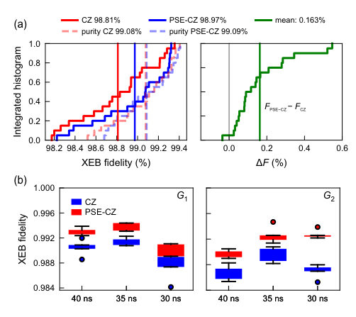
<figcaption class="paper-figure-caption"><b>Fig 3.</b> FIG. 4. Cross-entropy benchmarking (XEB) results. (a) Cumula- tive distribution functions of XEB fidelity (left) and fidelity improve- ment ∆F = FPSE-CZ−FCZ (right) across 20 qubit pairs at a fixed gate duration of 50ns on the 72-qubit processor “Wukong.” This duration was chosen to be compatible with the attainable coupling strengths of the measured qubit pairs. The XEB purity, which characterizes the decoherence-limited fidelity, is shown as lighter-colored dashed lines alongside the XEB fidelity for both PSE-CZ and traditional CZ gates. (b) XEB fidelity for qubit pairs G1 and G2 at gate durations of 40ns, 35ns, and 30ns. In the box plots, dot symbols indicate sta- tistical outliers and...</figcaption>
</figure>
</div>

<p><strong>Summary.</strong> The paper introduces a cyclic control method using parameter-space expansion to enable fast, high-fidelity controlled-Z gates on superconducting qubits. By adding an extra degree of freedom, the technique overcomes the speed-fidelity trade-off caused by short-timescale waveform distortions. This results in significantly lower coherent errors even when operating at very fast gate speeds.</p>
<p><strong>Why it may be interesting.</strong> This work provides a concrete, experimentally validated engineering solution for high-speed quantum gate operations that circumvents fundamental limitations imposed by realistic hardware noise models (STDs), which is crucial for scaling up quantum computation.</p>
<details>
<summary>Detailed structure</summary>
<p><strong>Main problem.</strong> The primary challenge is overcoming the inherent speed-fidelity trade-off when implementing fast quantum gates, specifically CZ gates, due to short-timescale waveform distortions (STDs).</p>
<p><strong>Main result.</strong> A novel cyclic control strategy based on parameter-space expansion successfully suppresses distortion-induced coherent errors while maintaining gate speed, fundamentally breaking the conventional speed-fidelity limitation.</p>
<p><strong>Method.</strong> The authors employ a Parameter-Space Expansion (PSE) technique by introducing an auxiliary degree of freedom to restore controllability and satisfy necessary symmetry constraints for fast cyclic evolution.</p>
<p><strong>Model / system.</strong> The work is performed on superconducting qubits, specifically using tunable transmon qubits coupled via tunable couplers in a 72-qubit processor architecture. The dynamics are analyzed by reducing the system's evolution to an effective two-level subspace $\{|11
angle, |20
angle\}$ for the CZ gate.</p>
<p><strong>Key observables.</strong> Coherent error rate (measured via cross-entropy benchmarking), leakage into $|20
angle$ state, and conditional phase accumulation ($   ext{CPhase}$).</p>
<p><strong>Important parameters / regimes.</strong> Gate duration ($    au$), distortion amplitude ($\alpha$), and the auxiliary control parameters $(\Delta_1, \Delta_2)$ used in the PSE protocol.</p>
<p><strong>Assumptions / limitations.</strong> The analysis assumes that leakage and CPhase errors can be independently diagnosed and suppressed by optimizing pulse shapes within the expanded parameter space.</p>
<p><strong>Figures summary.</strong> Figures compare simulated error rates vs. filter cutoff frequency (showing robustness), demonstrate gate error rates vs. duration ($   au$) showing the trade-off mitigation, and show XEB results quantifying fidelity improvement across varying fast gate times.</p>
<p><strong>Paper structure.</strong> The paper progresses from theoretical analysis of symmetry breaking due to STDs to proposing PSE, followed by detailed experimental diagnosis using leakage measurements and CPhase characterization, culminating in quantitative benchmarking via XEB on the superconducting hardware.</p>
</details>
<details>
<summary>Abstract</summary>
<p>High-fidelity quantum gates are essential for scalable quantum computation. However, at short durations, short-timescale waveform distortions break the time-reflection symmetry of control pulses, preventing the precise closure of cyclic evolution. This mechanism renders conventional symmetric protocols intrinsically over-constrained. Conventional strategies typically rely on smoothing the pulse envelopes or embedding the interaction pulse within a longer qubit pulse to bypass short-timescale distortions, which inevitably leads to a persistent speed-fidelity trade-off. To overcome this limitation, we introduce a cyclic control strategy based on parameter-space expansion, which restores controllability by incorporating an additional degree of freedom. We experimentally demonstrate this approach in a superconducting controlled-Z gate, achieving robust suppression of coherent errors without increasing gate duration, reducing the average coherent error from 0.27% to 0.12% across multiple two-qubit gates, as validated by cross-entropy benchmarking. Our results establish a general route to fast, high-fidelity cyclic quantum gates beyond the conventional speed-fidelity trade-off.</p>
</details>
<p><sub><a href="#top">↑ back to top</a></sub></p>
<hr>
<p>
<a href="index.html">← Index</a>
 · <a href="papers_01.html">← Previous</a> · <a href="papers_03.html">Next →</a>
</p>
<hr>

</body>
</html>
